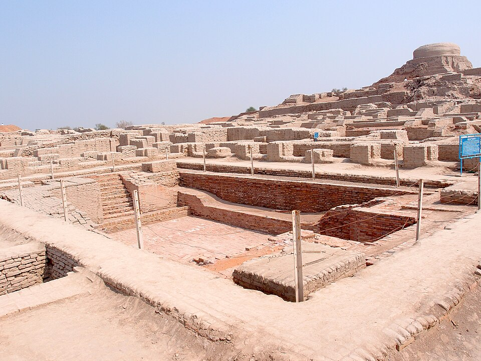
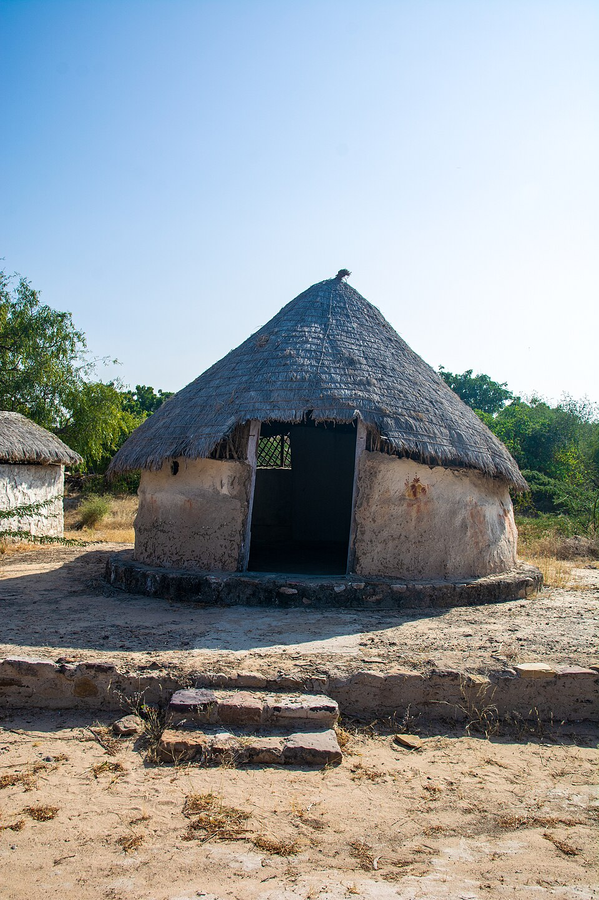
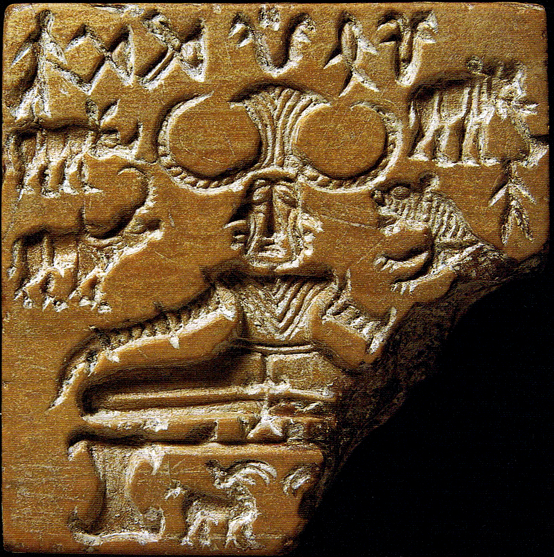
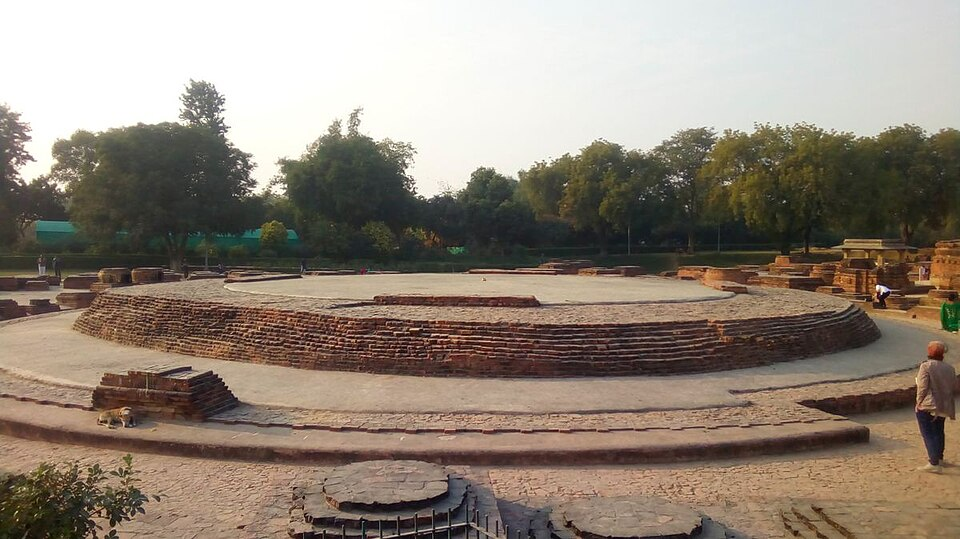
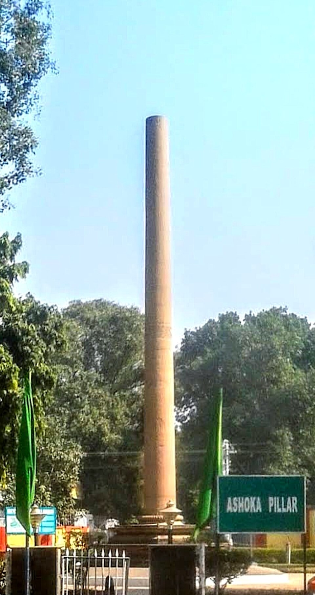
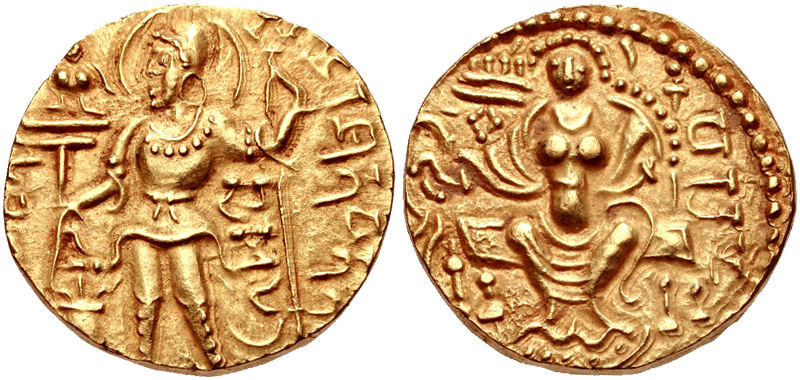

UPPSC प्राचीन भारत से प्रायः 4–6 प्रश्न पूछता है, और उनका स्वरूप लगभग सदैव एक-सा रहता है —
स्थल↔नदी/राज्य, अभिलेख↔शासक, ग्रंथ↔लेखक, शासक↔उपाधि का सुमेलन;
अथवा घटनाओं का कालक्रम। इसलिए इस अध्याय में हर खंड के अंत में वही तालिका दी गई है जिस रूप में प्रश्न बनता है।
पढ़ते समय कहानी समझिए, पर याद तालिका कीजिए।
कला, स्थापत्य, मूर्तिकला, चित्रकला तथा दर्शन का विस्तृत विवेचन अध्याय 2.5 (कला एवं संस्कृति) में है।
यहाँ उनका उल्लेख केवल ऐतिहासिक संदर्भ जितना है।
प्राचीन भारत का इतिहास लिखना कठिन है क्योंकि यहाँ तिथि-सहित इतिहास-लेखन की परंपरा नहीं थी।
कल्हण (Kalhana) की राजतरंगिणी (1148–50 ई., कश्मीर) को प्रायः भारत का पहला ऐतिहासिक चेतना-युक्त
ग्रंथ कहा जाता है — उससे पहले का इतिहास हमें तीन प्रकार के स्रोतों को जोड़कर बनाना पड़ता है:
साहित्यिक, पुरातात्विक तथा विदेशी विवरण।
1.1 साहित्यिक स्रोत — धार्मिक
ब्राह्मण परंपरा: वेद, ब्राह्मण, आरण्यक, उपनिषद, वेदांग तथा सूत्र-साहित्य से वैदिक समाज,
अर्थव्यवस्था और विश्वासों की जानकारी मिलती है। महाकाव्य — रामायण (वाल्मीकि) तथा महाभारत
(वेदव्यास)। महाभारत का विकास तीन चरणों में हुआ — मूल रूप जय संहिता (8,800 श्लोक) → भारत
(24,000) → महाभारत (1,00,000 श्लोक; इसीलिए 'शतसाहस्री संहिता')। 18 महापुराण राजवंशावलियाँ
देते हैं; मत्स्य, वायु, विष्णु तथा भागवत पुराण ऐतिहासिक दृष्टि से सर्वाधिक उपयोगी हैं।
बौद्ध परंपरा:त्रिपिटक — विनय पिटक (संघ के नियम), सुत्त पिटक (उपदेश) तथा अभिधम्म पिटक
(दार्शनिक विवेचन); भाषा पालि। जातक कथाएँ (लगभग 547) बुद्ध के पूर्व-जन्मों की कथाओं के बहाने
छठी शताब्दी ई.पू. के सामाजिक-आर्थिक जीवन का चित्र देती हैं। श्रीलंकाई इतिवृत्त दीपवंश तथा
महावंश मौर्य इतिहास के लिए अनिवार्य हैं। अन्य — मिलिन्दपन्हो, महावस्तु,
ललितविस्तर, दिव्यावदान।
जैन परंपरा: 12 अंग, 12 उपांग तथा अन्य आगम; भाषा अर्धमागधी प्राकृत। भगवती सूत्र
(महाजनपद एवं महावीर का जीवन), कल्पसूत्र (भद्रबाहु), आचारांग सूत्र, हेमचंद्र का
परिशिष्टपर्वन् (चंद्रगुप्त मौर्य की अनुश्रुति)।
1.2 साहित्यिक स्रोत — धर्मेतर (लौकिक)
ग्रंथ
लेखक
किस पर प्रकाश
अर्थशास्त्र
कौटिल्य / चाणक्य / विष्णुगुप्त
मौर्य प्रशासन, राजस्व, गुप्तचर, कूटनीति
अष्टाध्यायी
पाणिनि
संस्कृत व्याकरण; तत्कालीन जनपद, संस्थाएँ
महाभाष्य
पतंजलि
शुंग काल; यवन आक्रमण का संकेत
मुद्राराक्षस
विशाखदत्त
नंद-उन्मूलन एवं चंद्रगुप्त मौर्य का उत्कर्ष
मालविकाग्निमित्रम्
कालिदास
पुष्यमित्र शुंग एवं अग्निमित्र
गार्गी संहिता
—
यवन (हिन्द-यवन) आक्रमण का उल्लेख
हर्षचरित
बाणभट्ट
हर्षवर्धन; भारत की प्रथम ऐतिहासिक जीवनी-शैली की रचना
राजतरंगिणी
कल्हण
कश्मीर का क्रमबद्ध राजनीतिक इतिहास
कथासरित्सागर
सोमदेव
लोककथाओं में ऐतिहासिक संकेत
नीतिसार
कामंदक
गुप्तकालीन राजनीति-शास्त्र
1.3 पुरातात्विक स्रोत
(क) अभिलेख (Epigraphy) — सबसे विश्वसनीय स्रोत, क्योंकि इनमें बाद में परिवर्तन संभव नहीं।
ब्राह्मी लिपि का वाचन 1837 ई. में जेम्स प्रिंसेप (James Prinsep) ने किया — इसी से अशोक के
अभिलेख पढ़े जा सके। अभिलेख पत्थर, स्तंभ, ताम्रपत्र, मंदिर-भित्ति तथा मूर्ति-पीठ पर मिलते हैं।
अभिलेख
शासक
स्थान
विषय
प्रयाग प्रशस्ति (इलाहाबाद स्तंभ लेख)
समुद्रगुप्त (रचयिता हरिषेण)
प्रयागराज, उ.प्र.
दिग्विजय; आर्यावर्त-दक्षिणापथ नीति
भितरी स्तंभ लेख
स्कंदगुप्त
गाजीपुर, उ.प्र.
हूण एवं पुष्यमित्रों पर विजय; गुप्त वंशावली
जूनागढ़/गिरनार शिलालेख (लगभग 150 ई.)
रुद्रदामन प्रथम (शक)
जूनागढ़, गुजरात
सुदर्शन झील की मरम्मत; संस्कृत गद्य का प्राचीनतम विस्तृत अभिलेख
जूनागढ़ अभिलेख (दूसरा)
स्कंदगुप्त
जूनागढ़
सुदर्शन झील का पुनर्निर्माण (पर्णदत्त–चक्रपालित)
हाथीगुंफा अभिलेख
खारवेल (कलिंग)
उदयगिरि, ओडिशा
सैन्य अभियान; जैन धर्म; 'नंदराज' की नहर
नासिक प्रशस्ति
गौतमीपुत्र सातकर्णि (उत्कीर्ण माता गौतमी बलश्री द्वारा)
नासिक, महाराष्ट्र
शक नहपान पर विजय; 'एकब्राह्मण'
ऐहोल प्रशस्ति (634–35 ई.)
पुलकेशिन द्वितीय (रचयिता रविकीर्ति)
ऐहोल, कर्नाटक
हर्ष की पराजय; मेगुती जैन मंदिर पर उत्कीर्ण
बेसनगर गरुड़ स्तंभ (लगभग 113 ई.पू.)
हेलियोडोरस (राजदूत), शुंग नरेश भागभद्र के काल में
विदिशा, म.प्र.
भागवत/वैष्णव धर्म का प्राचीनतम अभिलेखीय साक्ष्य
मंदसौर अभिलेख (473 ई.)
कुमारगुप्त प्रथम के काल में, बंधुवर्मन के अधीन
मंदसौर, म.प्र.
रेशम-बुनकर श्रेणी द्वारा सूर्य मंदिर
एरण अभिलेख (510 ई.)
भानुगुप्त के काल में
सागर, म.प्र.
सती-प्रथा का प्रथम अभिलेखीय साक्ष्य
उत्तरमेरूर अभिलेख (919 एवं 921 ई.)
परांतक चोल प्रथम
काँचीपुरम्, तमिलनाडु
ग्राम-सभा की चुनाव प्रणाली (कुडवोलै)
मंडगपट्टु अभिलेख
महेंद्रवर्मन प्रथम (पल्लव)
तमिलनाडु
ईंट-लकड़ी-धातु-गारे के बिना गुहा-मंदिर
(ख) सिक्के (Numismatics) — जहाँ अभिलेख मौन हैं, वहाँ सिक्के राजवंश, विस्तार, धर्म तथा
आर्थिक स्थिति बताते हैं। सिक्कों के अध्ययन को मुद्राशास्त्र कहते हैं।
आहत सिक्के (Punch-marked, कार्षापण/पण) — भारत के प्राचीनतम सिक्के; चाँदी एवं ताँबे के; इन पर शासक का नाम नहीं, केवल प्रतीक।
हिन्द-यवन — भारत में शासक का नाम एवं चित्र अंकित करने वाले प्रथम सिक्के; भारत में प्रथम स्वर्ण सिक्के भी इन्हीं ने चलाए।
कुषाण — सर्वाधिक शुद्ध स्वर्ण सिक्के; रोमन 'ऑरियस' के भार-मानक का प्रभाव।
गुप्त — भारतीय शासकों में सर्वाधिक संख्या में स्वर्ण सिक्के ('दीनार'); पर बाद में शुद्धता घटी।
सातवाहन — मुख्यतः सीसे (lead) के सिक्के; यज्ञश्री सातकर्णि के सिक्कों पर जहाज।
मुद्रा-निधियों (hoards) की भौगोलिक वितरण से व्यापार-मार्ग का पता चलता है — जैसे दक्षिण भारत में रोमन स्वर्ण मुद्राएँ।
(ग) स्मारक एवं उत्खनन — नगर-अवशेष (हड़प्पा, कौशांबी, हस्तिनापुर), स्तूप, चैत्य-विहार,
मंदिर, मृद्भांड-परंपराएँ (गैरिक मृद्भांड/OCP, चित्रित धूसर मृद्भांड/PGW, उत्तरी कृष्ण मार्जित
मृद्भांड/NBPW) तथा भौतिक अवशेष। मृद्भांड पुरातत्व की 'घड़ी' हैं — किसी स्तर की तिथि तय
करने का सबसे सुलभ साधन।
1.4 विदेशी विवरण
यात्री / लेखक
देश
काल
किसके समय
कृति
हेरोडोटस
यूनान
5वीं शताब्दी ई.पू.
ईरानी शासन
हिस्टोरिका
मेगस्थनीज
यूनान
चौथी शताब्दी ई.पू.
चंद्रगुप्त मौर्य (सेल्यूकस का राजदूत)
इंडिका
डाइमेकस
यूनान
तीसरी शताब्दी ई.पू.
बिंदुसार (एंटियोकस का राजदूत)
—
डायोनिसियस
मिस्र
तीसरी शताब्दी ई.पू.
अशोक (टॉलेमी फिलाडेल्फस का राजदूत)
—
अज्ञात लेखक
यूनानी-मिस्री
लगभग 80 ई.
—
पेरिप्लस ऑफ द एरिथ्रियन सी (बंदरगाह एवं व्यापार)
टॉलेमी
मिस्र
दूसरी शताब्दी ई.
—
ज्योग्रैफी (भूगोल)
प्लिनी
रोम
प्रथम शताब्दी ई.
—
नेचुरलिस हिस्टोरिया (रोमन स्वर्ण के बहिर्गमन की शिकायत)
फाह्यान
चीन
399–414 ई. की यात्रा
चंद्रगुप्त द्वितीय
फो-क्यो-की
ह्वेनसांग
चीन
लगभग 630–644 ई. भारत में
हर्षवर्धन
सी-यू-की ('यात्रियों का राजकुमार')
इत्सिंग
चीन
लगभग 671–695 ई.
गुप्तोत्तर
नालंदा एवं बौद्ध संघ का विवरण
सुलेमान
अरब
9वीं शताब्दी
पाल एवं प्रतिहार
व्यापारिक यात्रा-वृत्तांत
अल-मसूदी
अरब
10वीं शताब्दी
—
मुरूज-उल-जहब
अल-बरूनी
मध्य एशिया
11वीं शताब्दी
महमूद गजनवी के साथ
तहकीक-ए-हिन्द (किताब-उल-हिन्द)
सावधानी — स्रोतों के भ्रम
मेगस्थनीज की 'इंडिका' मूल रूप में उपलब्ध नहीं है — वह स्ट्रैबो, एरियन, डायोडोरस आदि के उद्धरणों से पुनर्निर्मित है। इसीलिए उसके 'सात जातियाँ' जैसे विवरण संदिग्ध माने जाते हैं।
'इंडिका' = मेगस्थनीज; 'किताब-उल-हिन्द' = अल-बरूनी; 'सी-यू-की' = ह्वेनसांग; 'फो-क्यो-की' = फाह्यान। यह चार-सूत्री सुमेलन UPPSC का प्रिय है।
फाह्यान ने चंद्रगुप्त द्वितीय का नाम नहीं लिया — उसकी रुचि बौद्ध स्थलों में थी, राजनीति में नहीं। ह्वेनसांग ने हर्ष का नाम लिया।
ब्राह्मी का वाचन जेम्स प्रिंसेप ने किया, न कि जॉन मार्शल या कनिंघम ने। कनिंघम (Alexander Cunningham) भारतीय पुरातत्व सर्वेक्षण (ASI, 1861) के प्रथम महानिदेशक थे।
उत्तर प्रदेश संदर्भ
प्राचीन भारत के कई निर्णायक अभिलेख उत्तर प्रदेश की भूमि पर हैं —
प्रयाग प्रशस्ति (प्रयागराज; वही स्तंभ जो मूलतः कौशांबी में अशोक ने लगवाया था),
भितरी स्तंभ लेख (गाजीपुर), कहौम स्तंभ लेख (गोरखपुर क्षेत्र, स्कंदगुप्त),
बिलसड़ अभिलेख (एटा, कुमारगुप्त प्रथम), गढ़वा अभिलेख (प्रयागराज) तथा
सारनाथ एवं कौशांबी के लघु स्तंभ लेख (अशोक)। UPPSC प्रायः यही पूछता है कि
कोई अभिलेख किस जिले में है।
2. प्रागैतिहासिक काल
जिस काल के लिखित साक्ष्य नहीं मिलते उसे प्रागैतिहासिक (Prehistoric) कहते हैं; जिसकी लिपि
मिली है पर पढ़ी नहीं जा सकी (जैसे हड़प्पा) उसे आद्य-ऐतिहासिक (Proto-historic) कहते हैं।
भारत में प्रागैतिहासिक उपकरणों की प्रथम खोज 1863 ई. में रॉबर्ट ब्रूस फुट (Robert Bruce Foote) ने
पल्लवरम् (तमिलनाडु) में की — इसीलिए उन्हें 'भारतीय प्रागितिहास का जनक' कहा जाता है।
2.1 पुरापाषाण काल (Palaeolithic, लगभग 25 लाख – 10,000 ई.पू.)
आखेट एवं खाद्य-संग्रह पर आधारित जीवन; क्वार्ट्ज़ाइट के बड़े, अपरिष्कृत उपकरण। तीन चरण —
निम्न पुरापाषाण — हस्तकुठार (hand-axe) एवं विदारणी (cleaver); ऐश्यूलियन परंपरा।
स्थल — सोहन घाटी (पाकिस्तान), अत्तिरम्पक्कम (तमिलनाडु; भारत के प्राचीनतम ऐश्यूलियन उपकरण,
लगभग 15 लाख वर्ष पूर्व), भीमबेटका (म.प्र.), हुँसगी (कर्नाटक), दीदवाना (राजस्थान), बेलन घाटी (उ.प्र.)।
हथनौरा (नर्मदा घाटी, म.प्र.) से 1982 में 'नर्मदा मानव' का कपाल-अंश मिला (खोजकर्ता अरुण सोनकिया)।
मध्य पुरापाषाण — फलक (flake) आधारित उपकरण; नेवासा (महाराष्ट्र) प्रतिनिधि स्थल।
उच्च पुरापाषाण — तक्षणी (burin) एवं खुरचनी; बेलन घाटी (लोहंदा नाला, उ.प्र.) से
अस्थि-निर्मित मातृदेवी की आकृति — भारत में धार्मिक विश्वास का प्राचीनतम संकेत।
2.2 मध्यपाषाण काल (Mesolithic, लगभग 10,000 – 6000 ई.पू.)
विशेषता — सूक्ष्म पाषाण उपकरण (microliths); आखेट के साथ पशुपालन का आरंभ;
शव-संस्कार की व्यवस्थित परंपरा तथा शैलचित्रों की शुरुआत।
बागोर (राजस्थान, कोठारी नदी) — भारत का सबसे बड़ा एवं सुव्यवस्थित उत्खनित मध्यपाषाणिक स्थल; पशुपालन का प्राचीनतम साक्ष्य।
भीमबेटका (म.प्र.) — 700 से अधिक शैलाश्रय, जिनमें लगभग 400 में चित्र; UNESCO विश्व धरोहर (2003)।
लंघनाज (गुजरात), बीरभानपुर (प. बंगाल)।
2.3 नवपाषाण काल (Neolithic, लगभग 7000 – 1000 ई.पू., क्षेत्रवार भिन्न)
यह मानव-इतिहास का सबसे बड़ा मोड़ है — कृषि, पशु-पालन, स्थायी बस्ती, मृद्भांड (चाक), घिसे-पॉलिश किए
पत्थर के औजार। गॉर्डन चाइल्ड ने इसे 'नवपाषाण क्रांति' कहा।
स्थल
क्षेत्र
विशिष्ट साक्ष्य
मेहरगढ़
बलूचिस्तान (पाकिस्तान), बोलन नदी
भारतीय उपमहाद्वीप में कृषि (गेहूँ, जौ) एवं पशुपालन का प्राचीनतम साक्ष्य (लगभग 7000 ई.पू.); कपास का आरंभिक साक्ष्य
बुर्जहोम
कश्मीर घाटी
गर्त-आवास (pit dwelling); मानव के साथ कुत्ते का दफन; अस्थि-उपकरण
गुफकराल
कश्मीर
'कुम्हार की गुफा'; गर्त-आवास
चिरांद
सारण, बिहार (गंगा-घाघरा क्षेत्र)
हड्डी एवं सींग के उपकरणों की बहुलता
कोल्डिहवा एवं महगड़ा
प्रयागराज, उ.प्र. (बेलन घाटी)
धान (चावल) का अत्यंत प्राचीन साक्ष्य; गोलाकार झोपड़ियाँ, हस्तनिर्मित मृद्भांड
पिकलीहल, ब्रह्मगिरि, मस्की, संगनकल्लू, हल्लूर
कर्नाटक
राख के टीले (ash mounds); पशुपालक बस्तियाँ
पैयमपल्ली
तमिलनाडु
दक्षिणी नवपाषाण
दाओजली हैडिंग
असम (पूर्वोत्तर)
जेडाइट पत्थर के औजार — पूर्वी एशिया से संपर्क का संकेत
ध्यान रखें: कोल्डिहवा से मिले धान की तिथि को लेकर विद्वानों में गंभीर मतभेद है — कुछ इसे
6500 ई.पू. तक ले जाते हैं, जबकि अनेक पुराविद् इसे बहुत बाद का (लगभग 2000 ई.पू.) मानते हैं। परीक्षा में
यह स्थल 'चावल के प्राचीनतम साक्ष्य' के रूप में पूछा जाता है; तिथि विवादित है, इसलिए तिथि पर न अटकें।
2.4 ताम्रपाषाण काल (Chalcolithic, लगभग 3000 – 1000 ई.पू.)
पत्थर के साथ ताँबे का प्रयोग। भारत में अधिकांश ताम्रपाषाणिक संस्कृतियाँ
हड़प्पा के समकालीन या उससे बाद की, पर ग्रामीण हैं — वे नगरीय नहीं थीं। मुख्य फसलें — गेहूँ, जौ,
ज्वार, बाजरा, मसूर, कुल्थी; शिशु-मृत्यु-दर ऊँची; घर के फर्श के नीचे शवाधान।
संस्कृति
प्रमुख स्थल
राज्य / नदी
विशेषता
अहाड़ / बनास
आहड़ (ताम्बवती), गिलुंड, बालाथल
राजस्थान, बनास नदी
पत्थर के मकान; ताम्र-गलन का बड़ा केंद्र
कायथा
कायथा
म.प्र., चंबल क्षेत्र
पूर्व-हड़प्पा तत्वों का मेल
मालवा
नवदाटोली, एरण, महेश्वर
म.प्र., नर्मदा
उत्कृष्ट चित्रित मृद्भांड; एरण में परिखा-युक्त बस्ती
जोरवे
इनामगाँव, दैमाबाद, चंदोली, नेवासा, जोरवे
महाराष्ट्र
दक्कन की सर्वाधिक विकसित ताम्रपाषाणिक संस्कृति
ताम्र-निधि एवं गैरिक मृद्भांड (OCP)
सैपई (एटा), बिसौली, राजपुर परसू, हस्तिनापुर
उ.प्र. — गंगा-यमुना दोआब
हार्पून, अंत्यास्त्र, मानवाकृति ताम्र-पिंड
इनामगाँव (घोड़ नदी, पुणे, महाराष्ट्र) — दक्कन का सर्वाधिक उत्खनित एवं पुनर्रचित ताम्रपाषाणिक स्थल; नहर द्वारा बाढ़-जल के संग्रहण का साक्ष्य; 'क्षेत्रीय केंद्र' की भूमिका।
दैमाबाद (प्रवरा नदी, महाराष्ट्र) — काँसे की चार प्रसिद्ध मूर्तियाँ — रथ हाँकता मानव, वृषभ, हाथी, गैंडा। यह जोरवे संस्कृति का सबसे दक्षिणी हड़प्पाई प्रभाव-स्थल भी है।
लोहे का प्रयोग ताम्रपाषाण के बाद आरंभ हुआ — उ.प्र. का अतरंजीखेड़ा (एटा, काली नदी) भारत में लोहे के प्राचीनतम साक्ष्यों में गिना जाता है (लगभग 1200–1000 ई.पू. के स्तर)।
उत्तर प्रदेश संदर्भ — प्रागितिहास का एक पूरा संग्रहालय
बेलन घाटी (प्रयागराज/मिर्जापुर) — पुरापाषाण, मध्यपाषाण और नवपाषाण — तीनों चरणों का अखंड क्रम देने वाली दुर्लभ घाटी; उच्च पुरापाषाणिक मातृदेवी की अस्थि-आकृति यहीं से।
सराय नाहर राय, महदहा, दमदमा (प्रतापगढ़) — मध्यपाषाणिक मानव कंकाल।
कोल्डिहवा एवं महगड़ा (प्रयागराज) — नवपाषाणिक धान।
सैपई (एटा) — ताम्र-निधि एवं OCP; अतरंजीखेड़ा (एटा) — OCP, PGW तथा लोहा — एक ही टीले में हज़ारों वर्ष का इतिहास।
सावधानी — जिन युग्मों पर छात्र फिसलते हैं
बुर्जहोम = गर्त-आवास एवं कुत्ते का दफन; चिरांद = अस्थि-उपकरण। दोनों नवपाषाणिक हैं, पर विशेषता अलग है।
इनामगाँव ताम्रपाषाणिक है — पुरापाषाणिक नहीं। कई ऑनलाइन स्रोतों में यह गलती मिलती है।
मेहरगढ़ नवपाषाणिक स्थल है — हड़प्पा सभ्यता का नगर नहीं; वह हड़प्पा की पूर्वपीठिका है।
भीमबेटका का सर्वाधिक उल्लेख शैलचित्रों के लिए होता है, पर वहाँ निम्न पुरापाषाण से ऐतिहासिक काल तक का क्रम मिलता है।
कालक्रम — प्रागितिहास
क्रम
काल
अनुमानित तिथि
निर्णायक परिवर्तन
1
निम्न पुरापाषाण
लगभग 25 लाख – 1 लाख ई.पू.
हस्तकुठार; आखेट-संग्रहण
2
मध्य पुरापाषाण
लगभग 1 लाख – 40,000 ई.पू.
फलक-उपकरण
3
उच्च पुरापाषाण
लगभग 40,000 – 10,000 ई.पू.
आधुनिक मानव; कला का आरंभ
4
मध्यपाषाण
लगभग 10,000 – 6000 ई.पू.
सूक्ष्म पाषाण; पशुपालन
5
नवपाषाण
लगभग 7000 ई.पू. से
कृषि; स्थायी ग्राम; मृद्भांड
6
ताम्रपाषाण
लगभग 3000 – 1000 ई.पू.
ताँबे का प्रयोग; ग्रामीण संस्कृतियाँ
7
लौह युग
लगभग 1200 ई.पू. से
लोहा; दोआब में विस्तार; PGW
3. सिंधु घाटी (हड़प्पा) सभ्यता
यह भारतीय उपमहाद्वीप की प्रथम नगरीय सभ्यता है — मिस्र एवं मेसोपोटामिया की समकालीन, पर
क्षेत्रफल में उन दोनों से बड़ी। इसे 'सिंधु घाटी सभ्यता' नाम भौगोलिक आधार पर मिला, किंतु चूँकि
सर्वप्रथम उत्खनित स्थल हड़प्पा था, पुरातत्व की परंपरा के अनुसार इसे 'हड़प्पा सभ्यता' कहना
अधिक सही है — और चूँकि इसके अनेक स्थल सिंधु से बाहर हैं, अब 'सिंधु-सरस्वती सभ्यता' नाम भी प्रचलित है।
महानगर / प्रमुखबंदरगाहवर्तमान उत्तर प्रदेश
सिंधु सभ्यता के प्रमुख स्थल। मोहनजोदड़ो एवं चन्हूदड़ो वर्तमान पाकिस्तान (सिंध) में हैं, इसीलिए वे रेखा के बाहर दिखते हैं। आलमगीरपुर (मेरठ) सभ्यता का सर्वाधिक पूर्वी ज्ञात स्थल है।

मोहनजोदड़ो का विशाल स्नानागार (Great Bath) — नगर-नियोजन एवं जल-प्रबंधन का प्रमाण · चित्र: CC BY-SA 3.0

धौलावीरा (कच्छ, गुजरात) — जल-संरक्षण की उन्नत व्यवस्था; 2021 में UNESCO विश्व धरोहर घोषित · चित्र: CC BY-SA 4.0

पशुपति मुहर — सिंधु धर्म में प्राक्-शिव पूजा का संकेत माना जाता है · चित्र: Public domain
3.1 खोज एवं काल
1921 — दयाराम साहनी ने हड़प्पा (रावी नदी, साहीवाल/मोंटगोमरी ज़िला, पंजाब — पाकिस्तान) का उत्खनन किया।
1922 — राखालदास बनर्जी ने मोहनजोदड़ो ('मृतकों का टीला', सिंधु नदी, लरकाना ज़िला, सिंध — पाकिस्तान) की खोज की।
तत्कालीन ASI महानिदेशक सर जॉन मार्शल ने 1924 में विश्व के समक्ष इस सभ्यता की घोषणा की।
काल: परिपक्व/नगरीय चरण लगभग 2600–1900 ई.पू. (रेडियो-कार्बन तिथियों के आधार पर सर्वाधिक स्वीकृत); पूर्व-हड़प्पा लगभग 3300–2600 ई.पू.; उत्तर-हड़प्पा लगभग 1900–1300 ई.पू.
स्वतंत्र भारत में उत्खनित प्रथम हड़प्पाई स्थल — रोपड़ / रूपनगर (पंजाब, सतलज नदी; 1953, वाई.डी. शर्मा)।
3.2 विस्तार — चारों सीमांत स्थल
सभ्यता का आकार लगभग त्रिभुजाकार था और क्षेत्रफल लगभग 13 लाख वर्ग किलोमीटर — समकालीन
मिस्र एवं मेसोपोटामिया दोनों से बड़ा। सीमांत स्थल याद रखना UPPSC में सीधा प्रश्न है:
दिशा
स्थल
नदी
वर्तमान स्थिति
उत्तर
माण्डा
चिनाब
जम्मू-कश्मीर
दक्षिण
दैमाबाद
प्रवरा
अहमदनगर, महाराष्ट्र
पूर्व
आलमगीरपुर
हिंडन (यमुना की सहायक)
मेरठ, उत्तर प्रदेश
पश्चिम
सुत्कागेनडोर
दाश्क
बलूचिस्तान, पाकिस्तान (मकरान तट)
3.3 नगर-नियोजन
यही इस सभ्यता की सबसे बड़ी पहचान है।
जाल/ग्रिड पद्धति — सड़कें एक-दूसरे को समकोण पर काटती थीं; नगर 'शतरंज की बिसात' जैसा।
दो भागों में विभाजन — पश्चिम में ऊँचा दुर्ग (Citadel) (सार्वजनिक भवन, शासक वर्ग) तथा पूर्व में निचला नगर (सामान्य आवास)। धौलावीरा अपवाद है — वहाँ नगर तीन भागों में बँटा है।
पक्की ईंटें मानक अनुपात 4:2:1 में; इंग्लिश बॉन्ड शैली की चिनाई।
ढकी हुई नालियाँ एवं जल-निकासी — सभ्यता की सर्वाधिक चर्चित विशेषता; हर घर की नाली गली की नाली से, और गली की नाली मुख्य नाले से जुड़ी; नियमित अंतराल पर 'मैनहोल'।
प्रत्येक बड़े घर में कुआँ एवं स्नानघर; मोहनजोदड़ो में सर्वाधिक कुएँ।
चन्हूदड़ो एकमात्र ऐसा प्रमुख नगर है जहाँ दुर्ग नहीं मिला।
3.4 प्रमुख स्थल एवं उनकी विशिष्ट खोजें सबसे अधिक पूछा जाने वाला
स्थल
नदी
राज्य / देश
विशिष्ट खोज
हड़प्पा
रावी
साहीवाल, पंजाब (पाकिस्तान)
दो पंक्तियों में 6+6 अन्नागार; श्रमिक आवास; R-37 कब्रिस्तान तथा 'कब्रिस्तान H'; शंख का बैल; ताँबे का इक्का (गाड़ी)
मोहनजोदड़ो
सिंधु
लरकाना, सिंध (पाकिस्तान)
विशाल स्नानागार (Great Bath); विशाल अन्नागार (सबसे बड़ी इमारत); पशुपति मुहर; नर्तकी की काँस्य मूर्ति; 'पुरोहित-राजा' की मूर्ति; बुने सूती वस्त्र का टुकड़ा; सभा-भवन
कालीबंगा
घग्घर
हनुमानगढ़, राजस्थान
जुते हुए खेत (विश्व का प्राचीनतम); अग्नि-वेदिकाएँ; भूकंप का साक्ष्य; ऊँट की अस्थियाँ; लकड़ी की नाली; अलंकृत ईंट
लोथल
भोगावा
अहमदाबाद, गुजरात
गोदीवाड़ा (dockyard); चावल की भूसी; फारस की खाड़ी की मुहर; युग्म-शवाधान; हाथीदाँत का पैमाना; अग्नि-वेदिका
धौलावीरा
मनहर एवं मानसर नाले (कच्छ का रण, खादिर बेट)
कच्छ, गुजरात
विशाल जल-संचय जलाशय; नगर का तीन भागों में विभाजन; 10 अक्षरों वाला विशाल साइनबोर्ड; स्टेडियम; 2021 में UNESCO विश्व धरोहर — यह सूची में आने वाला भारत का प्रथम हड़प्पाई स्थल है
राखीगढ़ी
घग्घर (दृषद्वती क्षेत्र)
हिसार, हरियाणा
भारतीय उपमहाद्वीप का सबसे बड़ा हड़प्पाई स्थल (लगभग 350 हेक्टेयर); प्राचीन DNA अध्ययन
चन्हूदड़ो
सिंधु
सिंध (पाकिस्तान)
मनका बनाने का कारखाना; वक्राकार ईंट; बिल्ली का पीछा करते कुत्ते के पदचिह्न; दुर्ग-विहीन एकमात्र प्रमुख नगर
बनावली
रंगोई
फतेहाबाद, हरियाणा
मिट्टी का हल (खिलौना); उत्तम किस्म का जौ; अरीय (radial) सड़क-योजना
सुरकोटदा
—
कच्छ, गुजरात
घोड़े की अस्थियों का सर्वाधिक स्पष्ट साक्ष्य; कब्रिस्तान में कलश-शवाधान
रोपड़ (रूपनगर)
सतलज
पंजाब
स्वतंत्र भारत में उत्खनित प्रथम स्थल; मानव के साथ कुत्ते का दफन
आलमगीरपुर
हिंडन
मेरठ, उत्तर प्रदेश
सभ्यता का पूर्वतम स्थल; स्थानीय नाम 'परशुराम का खेड़ा'
कोटदीजी
सिंधु
सिंध (पाकिस्तान)
पूर्व-हड़प्पाई प्रस्तर-निर्मित रक्षा-प्राचीर; अग्निकांड के प्रमाण
सुत्कागेनडोर
दाश्क
बलूचिस्तान (पाकिस्तान)
पश्चिमी सीमांत; बेबीलोन से व्यापार-चौकी
बालाकोट, अल्लाहदीनो
—
सिंध (पाकिस्तान)
शंख-उद्योग; लघु किंतु समृद्ध बस्ती
रंगपुर, देसलपुर, भगतराव
—
गुजरात
उत्तर-हड़प्पाई अवस्था; धान की भूसी (रंगपुर)
3.5 अर्थव्यवस्था
कृषि: गेहूँ एवं जौ मुख्य; साथ में मटर, तिल, सरसों, राई, खजूर एवं कपास —
कपास उगाने वाली विश्व की प्रथम सभ्यता; यूनानियों ने कपास को 'सिंडन' (Sindon) कहा। चावल के
साक्ष्य लोथल एवं रंगपुर (गुजरात) से। हल का प्रयोग (कालीबंगा के जुते खेत, बनावली का मिट्टी का हल)।
पशुपालन: कूबड़ वाला बैल (सर्वाधिक सम्मानित), भैंस, भेड़, बकरी, सूअर, हाथी, कुत्ता।
घोड़ा सामान्यतः अनुपस्थित — केवल सुरकोटदा से विवादरहित साक्ष्य। सिंह (शेर) का
कोई चित्रण नहीं मिलता, जबकि बाघ मुहरों पर है।
शिल्प: मनका-निर्माण (लोथल, चन्हूदड़ो), शंख-शिल्प, धातु-कर्म (ताँबा, काँसा, सोना, चाँदी);
लोहे का ज्ञान नहीं था।
व्यापार: वस्तु-विनिमय (मुद्रा नहीं); बाटों की प्रणाली 16 के गुणज में
(16, 32, 64…); चर्ट पत्थर के बाट। मेसोपोटामियाई अभिलेखों में भारत को 'मेलुहा' कहा गया;
मार्ग में दिलमुन (बहरीन) तथा मकान (ओमान) पड़ते थे। लोथल का गोदीवाड़ा तथा
फारस की खाड़ी की मुहर समुद्री व्यापार के प्रमाण हैं। कच्चा माल — लाजवर्द (अफगानिस्तान), फिरोजा (ईरान),
ताँबा (खेतड़ी, राजस्थान), सोना (कर्नाटक)।
3.6 धर्म एवं समाज
मातृदेवी (पृथ्वी देवी) की पूजा — असंख्य मृण्मूर्तियाँ।
'पशुपति' मुहर (मोहनजोदड़ो) — योगमुद्रा में त्रिमुखी देवता, चारों ओर हाथी, बाघ, गैंडा एवं भैंसा, नीचे हिरण; मार्शल ने इसे आद्य-शिव कहा।
लिंग एवं योनि की पूजा; वृक्ष-पूजा (विशेषकर पीपल); पशु-पूजा (एकश्रृंगी पशु सबसे अधिक मुहरों पर); स्वस्तिक एवं चक्र के प्रतीक।
मंदिर नहीं मिला — यह मिस्र-मेसोपोटामिया से बड़ा अंतर है। अग्नि-वेदिकाएँ कालीबंगा एवं लोथल से।
शवाधान की तीन विधियाँ — पूर्ण समाधिकरण, आंशिक समाधिकरण तथा दाह-संस्कार। कब्रें प्रायः उत्तर-दक्षिण।
समाज में अस्त्र-शस्त्र अत्यल्प; तलवार का अभाव — अपेक्षाकृत शांतिप्रिय समाज का संकेत।
शासन-स्वरूप अनिश्चित; व्हीलर ने पुरोहित-वर्ग तथा स्टुअर्ट पिगट ने द्वि-राजधानी (हड़प्पा एवं मोहनजोदड़ो) का
विचार दिया, जबकि अनेक विद्वान वणिक-वर्ग के प्रभुत्व की बात करते हैं।
3.7 लिपि
हड़प्पा लिपि भावचित्रात्मक (pictographic) है और आज तक पढ़ी नहीं जा सकी।
इसमें लगभग 400–450 चिह्न हैं। लेखन की दिशा 'बुस्ट्रोफेडन' (गोमूत्रिका) है — पहली पंक्ति
दाएँ से बाएँ, अगली बाएँ से दाएँ। सर्वाधिक लेख मुहरों पर मिलते हैं (सेलखड़ी/steatite की,
प्रायः वर्गाकार)। सबसे लंबा ज्ञात लेख धौलावीरा के 'साइनबोर्ड' पर है।
3.8 पतन के सिद्धांत
सिद्धांत
प्रतिपादक
तर्क
आर्य आक्रमण
मार्टिमर व्हीलर, गॉर्डन चाइल्ड
मोहनजोदड़ो में बिखरे कंकाल; ऋग्वेद का 'पुरंदर' इंद्र। अब लगभग अस्वीकृत
बाढ़ एवं नदी का मार्ग-परिवर्तन
जॉन मार्शल, एस.आर. राव, एम.आर. साहनी
मोहनजोदड़ो में गाद की परतें; बार-बार पुनर्निर्माण
भूकंप एवं जल-अवरोध
जॉर्ज एफ. डेल्स, रॉबर्ट राइक्स
भू-उत्थान से सिंधु का अवरुद्ध होना; कालीबंगा में भूकंप के चिह्न
जलवायु परिवर्तन / शुष्कता
ऑरेल स्टीन, अमलानंद घोष
घग्घर-हाकड़ा का सूखना; वर्षा में कमी
पारिस्थितिक असंतुलन
वॉल्टर फेयरसर्विस
वनोन्मूलन, अति-चराई, ईंट-भट्टों हेतु लकड़ी की खपत
महामारी एवं आंतरिक ह्रास
के.यू.आर. केनेडी आदि
मलेरिया; प्रशासनिक शिथिलता
वर्तमान सहमति: पतन किसी एक कारण से नहीं, बल्कि बहु-कारक प्रक्रिया थी और
यह अचानक नहीं, क्रमिक था — नगर उजड़े, पर लोग नहीं मिटे; वे पूर्व एवं दक्षिण की ओर बढ़कर
ग्रामीण उत्तर-हड़प्पाई संस्कृतियों में ढल गए।
उत्तर प्रदेश संदर्भ — हड़प्पा का पूर्वी छोर
आलमगीरपुर (मेरठ, हिंडन नदी) — सभ्यता का पूर्वतम उत्खनित स्थल; यहाँ हड़प्पाई स्तर के ऊपर सीधे PGW (चित्रित धूसर मृद्भांड) के स्तर मिलते हैं, जिससे हड़प्पा और वैदिक संस्कृतियों के बीच की कड़ी पर बहस चलती है।
हुलास (सहारनपुर) एवं माँडी (मुजफ्फरनगर) — उत्तर-हड़प्पाई बस्तियाँ; माँडी से स्वर्णाभूषणों की निधि।
सनौली (बागपत) — 2005 एवं 2018 के उत्खननों में ठोस पहियों वाले रथ, ताबूत-शवाधान तथा ताम्र-आयुध मिले (लगभग 2000–1800 ई.पू.)। यह हड़प्पा-नगरीय नहीं, बल्कि समकालीन ताम्र-निधि/OCP परंपरा से जुड़ा योद्धा-समाज माना जाता है — इसे 'हड़प्पाई नगर' कहकर भ्रमित न हों।
सावधानी — हड़प्पा के सर्वाधिक फँसाने वाले बिंदु
कालीबंगा बंदरगाह नहीं था — बंदरगाह/गोदीवाड़ा लोथल में था। कालीबंगा की पहचान जुते हुए खेत एवं अग्नि-वेदिकाएँ हैं।
सबसे बड़ा स्थल:भारत में राखीगढ़ी; सम्पूर्ण सभ्यता में मोहनजोदड़ो को प्रायः सबसे बड़ा नगर कहा जाता है। प्रश्न में 'भारत में' शब्द है या नहीं — यही उत्तर तय करता है।
विशाल स्नानागार एवं विशाल अन्नागार दोनों मोहनजोदड़ो में हैं; हड़प्पा में अन्नागार-श्रृंखला (6+6) तथा श्रमिक आवास हैं।
धौलावीरा 2021 में UNESCO सूची में आया — भारत का प्रथम हड़प्पाई विश्व धरोहर स्थल।
हड़प्पा के नगरों के पतन के बाद उपमहाद्वीप का केंद्र पश्चिमोत्तर से खिसककर सप्तसिंधु और
फिर गंगा-यमुना दोआब की ओर आ गया। इस काल का ज्ञान हमें मुख्यतः साहित्य से मिलता है,
पुरातत्व से कम — इसलिए इसे 'वैदिक काल' कहते हैं। इसे दो भागों में बाँटा जाता है।
4.1 ऋग्वैदिक (आरंभिक वैदिक) काल — लगभग 1500–1000 ई.पू.
भौगोलिक क्षेत्र: 'सप्तसिंधु' — सिंधु एवं उसकी सहायक नदियाँ, अफगानिस्तान से लेकर
पश्चिमी उ.प्र. तक। ऋग्वेद में सिंधु का उल्लेख सर्वाधिक बार है, जबकि सरस्वती को
सर्वाधिक पवित्र ('नदीतमा') कहा गया है। गंगा का उल्लेख केवल एक बार, यमुना का तीन बार।
वैदिक नाम
आधुनिक नाम
वैदिक नाम
आधुनिक नाम
वितस्ता
झेलम
कुभा
काबुल
अस्किनी / चंद्रभागा
चिनाब
क्रुमु
कुर्रम
परुष्णी
रावी
सुवास्तु
स्वात
विपाशा
व्यास
गोमती/गोमल
गोमल
शुतुद्री
सतलज
दृषद्वती
चौतंग / घग्घर की सहायक
सदानीरा
गंडक (सामान्यतः मान्य पहचान)
सिंधु
सिंधु
राजनीतिक जीवन
इकाई-क्रम: कुल → ग्राम → विश् → जन। 'जन' शब्द ऋग्वेद में लगभग 275 बार, जबकि 'जनपद' एक बार भी नहीं — अर्थात् राज्य भूमि पर नहीं, जन-समूह पर आधारित था।
राजन् जन का नेता ('गोप्ता जनस्य'), वंशानुगत पर निरंकुश नहीं; कोई स्थायी सेना या नियमित कर नहीं। बलि स्वैच्छिक भेंट थी।
संस्थाएँ: सभा (वृद्धों/श्रेष्ठों की), समिति (सम्पूर्ण जन की; राजा का चयन भी), विदथ (ऋग्वेद में सर्वाधिक बार वर्णित एवं प्राचीनतम संस्था — इसमें स्त्रियाँ भी भाग लेती थीं), गण।
अधिकारी: पुरोहित, सेनानी, ग्रामणी, व्राजपति, कुलप। 'स्पश' गुप्तचर थे।
दशराज्ञ युद्ध (Battle of Ten Kings) — परुष्णी (रावी) नदी के तट पर;
भरत जन के राजा सुदास ने दस जनों के संघ को हराया। सुदास के पुरोहित वसिष्ठ थे,
विरोधी पक्ष के विश्वामित्र। यही 'भरत' नाम आगे चलकर देश के नाम का आधार बना।
सामाजिक जीवन
पितृसत्तात्मक, कुल-आधारित समाज। वर्ण-विभाजन कर्म-आधारित एवं लचीला था;
'पुरुषसूक्त' (ऋग्वेद, 10वाँ मंडल) में चतुर्वर्ण का उल्लेख है, किंतु यह मंडल परवर्ती है।
स्त्रियों की स्थिति अपेक्षाकृत अच्छी — सभा-विदथ में भाग; उपनयन का अधिकार;
विदुषी मंत्र-द्रष्टा — लोपामुद्रा, घोषा, अपाला, विश्ववारा, सिकता, नीवावरी। बाल-विवाह, पर्दा एवं
सती-प्रथा नहीं थी; विधवा-विवाह (नियोग) प्रचलित।
मुख्य पेय — सोम (धार्मिक) एवं सुरा (लौकिक); भोजन में दूध-दही-घी।
आर्थिक जीवन
पशुचारण प्रधान अर्थव्यवस्था; गाय ही धन का पैमाना।
'गविष्टि' (गाय की खोज) का अर्थ ही युद्ध हो गया था; 'गोमत' = धनी; 'गोधूलि' = समय की इकाई।
कृषि गौण थी — ऋग्वेद में कृषि के उल्लेख सीमित हैं। 'अयस' का अर्थ ताँबा/काँसा; लोहे का ज्ञान नहीं।
व्यापार वस्तु-विनिमय पर; 'निष्क' स्वर्ण आभूषण था, सिक्का नहीं। 'पणि' व्यापारी/कृपण धनी वर्ग।
धार्मिक जीवन
प्रकृति की शक्तियों का मानवीकरण; बहुदेववाद के साथ 'एकेश्वरवाद की ओर झुकाव' (हेनोथीइज़्म)।
इंद्र सर्वाधिक महत्वपूर्ण (लगभग 250 सूक्त) — 'पुरंदर' (दुर्गों को तोड़ने वाला), वर्षा एवं युद्ध का देवता।
अग्नि दूसरे स्थान पर (लगभग 200 सूक्त) — देवताओं एवं मनुष्यों के बीच मध्यस्थ।
वरुण — 'ऋत' (विश्व-व्यवस्था) का रक्षक, नैतिक व्यवस्था का देवता।
सोम — वनस्पति का देवता, जिसे पूरा नौवाँ मंडल समर्पित है।
अन्य — सूर्य, सविता, पूषन (पशुओं का), मरुत (आँधी), उषा एवं अदिति (प्रमुख देवियाँ), अश्विन (चिकित्सा), रुद्र।
न मंदिर, न मूर्ति-पूजा; यज्ञ सरल एवं घरेलू; कामना भौतिक थी — पशु, संतान, स्वास्थ्य, विजय।
4.2 उत्तर वैदिक काल — लगभग 1000–600 ई.पू.
भौगोलिक केंद्र गंगा-यमुना दोआब की ओर खिसक गया — कुरु एवं पांचाल इस युग के हृदय बन गए।
इसका पुरातात्विक समकक्ष चित्रित धूसर मृद्भांड (PGW) संस्कृति है, और इसी काल में
लोहे ('श्याम अयस' / 'कृष्ण अयस') का प्रयोग आरंभ हुआ, जिसने घने वन काटकर दोआब में कृषि संभव बनाई।
राजनीतिक परिवर्तन
छोटे 'जन' मिलकर बड़े जनपद बने — कुरु, पांचाल, काशी, कोसल, विदेह। राजा 'सम्राट', 'एकराट', 'विराट', 'भोज' कहलाने लगा।
महान यज्ञ — राजसूय (राज्याभिषेक), अश्वमेध (सार्वभौम सत्ता की घोषणा), वाजपेय (रथ-दौड़ द्वारा शक्ति-प्रदर्शन)।
रत्निन — 12 उच्च पदाधिकारी, जिन्हें राजसूय में आहुति दी जाती थी (सेनानी, पुरोहित, महिषी, सूत, ग्रामणी, क्षत्ता, संग्रहीता, भागदुध, अक्षावाप, गोविकर्तन, पालागल आदि)।
विदथ लुप्त हो गया; सभा एवं समिति का महत्व घटा; स्त्रियों का सभा में प्रवेश बंद।
बलि अब अनिवार्य कर बन गया; 'भागदुध' कर-संग्राहक।
सामाजिक परिवर्तन
चतुर्वर्ण व्यवस्था दृढ़ — ब्राह्मण एवं क्षत्रिय का प्रभुत्व, वैश्य कर-दाता, शूद्र सेवक। 'ऐतरेय ब्राह्मण' में चारों वर्णों की स्थिति स्पष्ट रूप से वर्णित है।
गोत्र व्यवस्था तथा गोत्र-बहिर्विवाह का आरंभ। आश्रम व्यवस्था — छांदोग्य उपनिषद में तीन आश्रम, जाबालोपनिषद में चारों (ब्रह्मचर्य, गृहस्थ, वानप्रस्थ, संन्यास) का पहला स्पष्ट उल्लेख।
स्त्रियों की स्थिति में स्पष्ट गिरावट; फिर भी गार्गी वाचक्नवी एवं मैत्रेयी जैसी विदुषियाँ (बृहदारण्यक उपनिषद में याज्ञवल्क्य से संवाद)।
आर्थिक परिवर्तन
कृषि प्रधान अर्थव्यवस्था; शतपथ ब्राह्मण में कृषि के चार चरण — जुताई, बुवाई, कटाई तथा मड़ाई — का उल्लेख है। चावल ('व्रीहि') एवं गेहूँ ('गोधूम') का प्रसार।
शतपथ ब्राह्मण में विदेघ माथव की कथा है, जो अग्नि को लेकर सरस्वती से चलकर
सदानीरा पार कर विदेह पहुँचा — यह आर्य-संस्कृति के पूर्व की ओर विस्तार का साहित्यिक साक्ष्य है।
निष्क, शतमान, कृष्णल — तौल एवं विनिमय की इकाइयाँ, पर अभी नियमित मुद्रा नहीं।
प्रजापति सर्वोच्च देवता बने; विष्णु तथा रुद्र का महत्व बढ़ा; इंद्र-वरुण गौण हो गए। पूषन शूद्रों के देवता बन गए।
यज्ञ जटिल, खर्चीले एवं पुरोहित-केंद्रित हो गए; बलि बड़े पैमाने पर — कृषि-अर्थव्यवस्था के लिए हानिकारक।
इसी की प्रतिक्रिया में उपनिषदों में कर्मकांड के स्थान पर ज्ञान, आत्मा-ब्रह्म, कर्म एवं पुनर्जन्म पर बल आया — यही आगे चलकर बौद्ध एवं जैन आंदोलनों की भूमि बनी।
4.3 वैदिक साहित्य — सुमेलन-योग्य तालिका
वेद
विषय
ब्राह्मण
आरण्यक
प्रमुख उपनिषद
ऋग्वेद — 10 मंडल, 1028 सूक्त, लगभग 10,600 मंत्र
देवताओं की स्तुति; प्राचीनतम वेद
ऐतरेय, कौषीतकि (शांखायन)
ऐतरेय, कौषीतकि
ऐतरेय, कौषीतकि
सामवेद — 1810 (या 1875) मंत्र
गायन; भारतीय संगीत का मूल
पंचविंश (ताण्ड्य), षड्विंश, जैमिनीय
तवलकार (जैमिनीय)
छांदोग्य, केन
यजुर्वेद — शुक्ल एवं कृष्ण
यज्ञ की विधि; गद्य एवं पद्य दोनों
शतपथ (शुक्ल — सबसे बड़ा एवं महत्वपूर्ण ब्राह्मण), तैत्तिरीय (कृष्ण)
बृहदारण्यक, तैत्तिरीय, मैत्रायणी
बृहदारण्यक (सबसे बड़ा एवं प्राचीनतम), ईश, कठ, तैत्तिरीय, श्वेताश्वतर
उपनिषदों की संख्या मुक्तिकोपनिषद के अनुसार 108; दार्शनिक दृष्टि से प्रमुख 10–13।
वेदांग (6): शिक्षा (उच्चारण), कल्प (कर्मकांड), व्याकरण (पाणिनि की अष्टाध्यायी), निरुक्त (यास्क — विश्व का प्राचीनतम ज्ञात शब्द-व्युत्पत्ति कोश), छंद (पिंगल), ज्योतिष (लगध का वेदांग ज्योतिष)।
उपवेद (4): आयुर्वेद (ऋग्वेद), धनुर्वेद (यजुर्वेद), गंधर्ववेद (सामवेद), शिल्प/स्थापत्यवेद (अथर्ववेद)।
षड्दर्शन: सांख्य–कपिल, योग–पतंजलि, न्याय–गौतम (अक्षपाद), वैशेषिक–कणाद, पूर्व मीमांसा–जैमिनी, उत्तर मीमांसा/वेदांत–बादरायण। (विस्तृत विवेचन अध्याय 2.5 में)
उत्तर प्रदेश संदर्भ — उत्तर वैदिक काल की भूमि
उत्तर वैदिक संस्कृति का हृदय कुरु-पांचाल क्षेत्र था, जो आज का
पश्चिमी उत्तर प्रदेश एवं हरियाणा है। PGW मृद्भांड तथा आरंभिक लोहे के साक्ष्य देने वाले
प्रमुख स्थल उ.प्र. में हैं — हस्तिनापुर (मेरठ) (यहाँ बी.बी. लाल के उत्खनन में बाढ़ से बस्ती
के उजड़ने का साक्ष्य मिला, जो पुराणों की 'कौशांबी स्थानांतरण' की अनुश्रुति से मेल खाता है),
अतरंजीखेड़ा (एटा), अहिच्छत्र (बरेली), कांपिल्य (फर्रुखाबाद),
श्रृंगवेरपुर (प्रयागराज) एवं कौशांबी। परीक्षा में PGW का संबंध सीधे इन
स्थलों से पूछा जाता है।
सावधानी — वैदिक काल के क्लासिक distractor
शतपथ ब्राह्मण = शुक्ल यजुर्वेद; गोपथ = अथर्ववेद; पंचविंश = सामवेद; ऐतरेय = ऋग्वेद।
अथर्ववेद का कोई आरण्यक नहीं है — यह 'कौन-सा युग्म सुमेलित नहीं है' प्रारूप का प्रिय विकल्प है।
विदथ सबसे प्राचीन संस्था है, सभा या समिति नहीं; और यही सबसे पहले लुप्त हुई।
दशराज्ञ युद्ध परुष्णी (रावी) पर हुआ — 'सिंधु' या 'सरस्वती' विकल्प जाल हैं।
ऋग्वैदिक काल में लोहा नहीं था; 'श्याम/कृष्ण अयस' उत्तर वैदिक काल का शब्द है।
गायत्री मंत्र सवितृ को समर्पित है, 'गायत्री' नामक देवी को नहीं — गायत्री तो छंद का नाम है।
5. महाजनपद काल एवं धार्मिक आंदोलन
छठी शताब्दी ई.पू. भारतीय इतिहास का सबसे गतिशील कालखंड है। लोहे के व्यापक प्रयोग से अधिशेष अन्न पैदा हुआ,
अधिशेष से नगर बने (द्वितीय नगरीकरण), नगरों से व्यापार एवं मुद्रा (आहत सिक्के) आई, और
व्यापारी वर्ग ने ऐसे धर्म माँगे जो जन्म नहीं, कर्म को महत्व दें। ठीक इसी समय
16 महाजनपद उभरे और बौद्ध एवं जैन आंदोलन प्रारंभ हुए।
बौद्ध स्थलपुरातात्विकगुप्त/अभिलेख
प्राचीन काल के वे स्थल जो वर्तमान उत्तर प्रदेश में हैं — UPPSC में यही सर्वाधिक पूछे जाते हैं।

धमेख स्तूप, सारनाथ (वाराणसी) — बुद्ध का प्रथम उपदेश स्थल; 2026 में भारत का 45वाँ UNESCO विश्व धरोहर · चित्र: CC BY-SA 4.0
5.1 सोलह महाजनपद
सूची बौद्ध ग्रंथ अंगुत्तर निकाय में मिलती है; जैन ग्रंथ भगवती सूत्र में भी
16 की सूची है पर नाम कुछ भिन्न हैं।
#
महाजनपद
राजधानी
वर्तमान क्षेत्र
1
काशी
वाराणसी
वाराणसी, उ.प्र.
2
कोसल
श्रावस्ती (उत्तरी), साकेत/अयोध्या (दक्षिणी)
पूर्वी उ.प्र. (श्रावस्ती, गोंडा, अयोध्या)
3
अंग
चंपा
भागलपुर–मुंगेर, बिहार
4
मगध
गिरिव्रज/राजगृह, बाद में पाटलिपुत्र
पटना–गया, बिहार
5
वज्जि संघ
वैशाली
उत्तर बिहार (8 कुलों का संघ; लिच्छवि प्रमुख)
6
मल्लसंघ
कुशीनारा एवं पावा
कुशीनगर–देवरिया, उ.प्र.
7
चेदि
शक्तिमती (सोत्थिवती)
बुंदेलखंड, म.प्र.
8
वत्स
कौशांबी
प्रयागराज, उ.प्र.
9
कुरु
इंद्रप्रस्थ
दिल्ली–मेरठ–हरियाणा
10
पांचाल
अहिच्छत्र (उत्तर), कांपिल्य (दक्षिण)
बरेली एवं फर्रुखाबाद, उ.प्र.
11
मत्स्य
विराटनगर (बैराठ)
जयपुर–अलवर, राजस्थान
12
शूरसेन
मथुरा
मथुरा, उ.प्र.
13
अश्मक (अस्सक)
पोतन / पोटली
गोदावरी तट, महाराष्ट्र — एकमात्र दक्षिणी महाजनपद
14
अवंति
उज्जयिनी (उत्तर), महिष्मती (दक्षिण)
मालवा, म.प्र.
15
गांधार
तक्षशिला
पेशावर–रावलपिंडी, पाकिस्तान
16
कंबोज
हाटक / राजपुर
पुंछ–कश्मीर एवं पूर्वी अफगानिस्तान
उत्तर प्रदेश संदर्भ — 16 में से 6 महाजनपद उ.प्र. में
काशी, कोसल, मल्ल, वत्स, पांचाल एवं शूरसेन — छह महाजनपद पूर्णतः या मुख्यतः
आज के उत्तर प्रदेश में थे (कुरु आंशिक रूप से)। यही कारण है कि UPPSC महाजनपद-राजधानी सुमेलन
लगभग हर वर्ष किसी न किसी रूप में पूछता है।
तीन बड़ी प्रतिद्वंद्विताएँ भी यहीं की थीं — काशी बनाम कोसल
(काशी पर अधिकार), कोसल का प्रसेनजित (श्रावस्ती) बनाम मगध का अजातशत्रु, तथा
वत्सराज उदयन (कौशांबी) की कथाएँ, जो 'स्वप्नवासवदत्ता' (भास) एवं 'रत्नावली' (हर्ष) तक
साहित्य में जीवित रहीं।
गणराज्य/संघ: सभी महाजनपद राजतंत्र नहीं थे। वज्जि एवं मल्ल
गणराज्य थे। इनके अतिरिक्त शाक्य (कपिलवस्तु — बुद्ध का कुल), लिच्छवि (वैशाली), कोलिय (रामग्राम),
मोरिय (पिप्पलिवन), बुलि, भग्ग तथा विदेह के गण थे। वज्जि संघ का अध्यक्ष 'गणपति' कहलाता था।
5.2 धार्मिक आंदोलनों के कारण
उत्तर वैदिक कर्मकांड की जटिलता एवं खर्च; पुरोहितों की अनिवार्यता।
वर्ण-व्यवस्था की कठोरता — क्षत्रिय (बुद्ध एवं महावीर दोनों क्षत्रिय थे) एवं वैश्य वर्ग का असंतोष।
कृषि विस्तार — पशु-बलि से बैलों की हानि; अहिंसा का उपदेश कृषक-वणिक हित में था।
व्यापार एवं मुद्रा का उदय — ब्राह्मण ग्रंथों में सूद पर धन देने की निंदा थी; नए धर्म वणिक-हितैषी थे।
जन-भाषा — बौद्धों ने पालि एवं जैनों ने अर्धमागधी प्राकृत को अपनाया, संस्कृत को नहीं।
5.3 बौद्ध धर्म
गौतम बुद्ध (पारंपरिक तिथियाँ 563–483 ई.पू.; कुछ विद्वान महापरिनिर्वाण लगभग 483 के स्थान पर 400 ई.पू. के निकट मानते हैं)।
जन्म — लुम्बिनी (नेपाल), शाक्य गणराज्य; पिता शुद्धोधन, माता महामाया (मृत्यु के बाद पालन मौसी प्रजापति गौतमी ने किया, जो बाद में प्रथम भिक्षुणी बनीं); पत्नी यशोधरा, पुत्र राहुल।
महाभिनिष्क्रमण — 29 वर्ष की आयु में गृह-त्याग (प्रतीक — घोड़ा)। गुरु — आलार कालाम एवं रुद्रक रामपुत्त।
सम्बोधि / ज्ञान — 35 वर्ष की आयु में बोधगया (निरंजना/फल्गु नदी के तट पर, पीपल वृक्ष के नीचे)। प्रतीक — बोधि वृक्ष।
धर्मचक्र-प्रवर्तन (प्रथम उपदेश) — सारनाथ (ऋषिपत्तन/मृगदाव), वाराणसी के निकट; पाँच पूर्व-साथियों को। प्रतीक — चक्र।
महापरिनिर्वाण — 80 वर्ष की आयु में कुशीनगर (मल्ल गणराज्य), उ.प्र.। प्रतीक — स्तूप।
चार आर्य सत्य: (1) दुःख, (2) दुःख-समुदाय (दुःख का कारण — तृष्णा), (3) दुःख-निरोध,
(4) दुःख-निरोध-गामिनी प्रतिपदा (मार्ग)। अष्टांगिक मार्ग: सम्यक् दृष्टि, सम्यक् संकल्प, सम्यक् वाक्, सम्यक् कर्मांत, सम्यक् आजीव,
सम्यक् व्यायाम, सम्यक् स्मृति, सम्यक् समाधि। त्रिरत्न: बुद्ध, धम्म, संघ। मध्यम मार्ग — न अति भोग, न अति तप।
दार्शनिक आधार: अनीश्वरवाद (ईश्वर की सत्ता पर मौन), अनात्मवाद (नित्य आत्मा नहीं),
क्षणिकवाद, प्रतीत्यसमुत्पाद (कार्य-कारण की श्रृंखला) तथा कर्म एवं पुनर्जन्म
में विश्वास — किंतु जाति-व्यवस्था तथा वेदों की प्रामाणिकता का अस्वीकार।
संप्रदाय:हीनयान/थेरवाद (पालि; बुद्ध को महापुरुष मानता; मूर्ति-पूजा नहीं;
श्रीलंका-म्यांमार-थाईलैंड), महायान (संस्कृत; बुद्ध की दैवी कल्पना, बोधिसत्व की
धारणा, मूर्ति-पूजा; कनिष्क के संरक्षण में विकसित; चीन-जापान-कोरिया), वज्रयान (लगभग 8वीं
शताब्दी, तंत्र-मंत्र एवं 'तारा' जैसी देवियाँ; पूर्वी भारत एवं तिब्बत)।
बौद्ध संगीतियाँ अति महत्वपूर्ण सुमेलन
संगीति
वर्ष
स्थान
संरक्षक
अध्यक्ष
परिणाम
प्रथम
483 ई.पू.
राजगृह (सप्तपर्णि गुफा)
अजातशत्रु (हर्यक)
महाकस्सप
विनय पिटक (उपालि) एवं सुत्त पिटक (आनंद) का संकलन
द्वितीय
383 ई.पू.
वैशाली
कालाशोक (शिशुनाग)
सबकमी
संघ में प्रथम विभाजन — स्थविरवादी एवं महासांघिक
तृतीय
250 ई.पू.
पाटलिपुत्र
अशोक (मौर्य)
मोग्गलिपुत्त तिस्स
अभिधम्म पिटक जोड़ा गया; 'कथावत्थु' की रचना; धर्म-प्रचारक विदेश भेजे गए
चतुर्थ
प्रथम शताब्दी ई. (परंपरागत रूप से लगभग 72 ई.)
कुण्डलवन (कश्मीर)
कनिष्क (कुषाण)
वसुमित्र (उपाध्यक्ष अश्वघोष)
हीनयान–महायान विभाजन स्पष्ट; 'महाविभाषशास्त्र' का संकलन
चतुर्थ संगीति की तिथि कनिष्क के राज्यकाल पर निर्भर है, जो स्वयं विवादित है (परंपरागत 78 ई.,
अनेक आधुनिक विद्वान 127 ई.)। परीक्षा में स्थान (कुण्डलवन/कश्मीर), संरक्षक (कनिष्क) एवं
अध्यक्ष (वसुमित्र) पूछे जाते हैं — तिथि कम।
5.4 जैन धर्म
24 तीर्थंकर। प्रथम ऋषभदेव (आदिनाथ) — ऋग्वेद एवं विष्णु पुराण में उल्लेख; चिह्न वृषभ। 23वें पार्श्वनाथ — वाराणसी के राजा अश्वसेन के पुत्र, महावीर से लगभग 250 वर्ष पूर्व; चिह्न सर्प; उन्होंने चार व्रत (चातुर्याम) दिए — अहिंसा, सत्य, अस्तेय, अपरिग्रह।
महावीर (वर्धमान) — पारंपरिक तिथियाँ 540–468 ई.पू. (श्वेतांबर परंपरा 599–527 ई.पू. मानती है)। जन्म कुंडग्राम (वैशाली के निकट, बिहार); ज्ञातृक क्षत्रिय कुल; पिता सिद्धार्थ, माता त्रिशला (लिच्छवि प्रमुख चेटक की बहन); पत्नी यशोदा; पुत्री अनोज्जा/प्रियदर्शना; दामाद जामालि — जो पहला विद्रोही शिष्य बना।
30 वर्ष की आयु में गृह-त्याग; 12 वर्ष की तपस्या के बाद ऋजुपालिका नदी के तट पर (जृम्भिकग्राम) कैवल्य प्राप्त किया। उपाधियाँ — केवलिन, जिन, अर्हत, निर्ग्रंथ, महावीर।
निर्वाण — 72 वर्ष की आयु में पावापुरी (नालंदा, बिहार)।
पंच महाव्रत: पार्श्वनाथ के चार में महावीर ने पाँचवाँ — ब्रह्मचर्य — जोड़ा।
सिद्धांत:अनेकांतवाद (सत्य के अनेक पक्ष) एवं स्याद्वाद/सप्तभंगी नय ('स्यात्' = किसी दृष्टि से); जीव–अजीव; कठोर अहिंसा; कर्म-बंधन एवं निर्जरा; सल्लेखना/संथारा (उपवास द्वारा देह-त्याग)। जैन धर्म ईश्वर को सृष्टिकर्ता नहीं मानता, पर आत्मा को मानता है — यही बौद्ध धर्म से बड़ा अंतर है।
विभाजन: चंद्रगुप्त मौर्य के समय मगध में पड़े 12 वर्षीय अकाल में भद्रबाहु दक्षिण (श्रवणबेलगोला) चले गए और स्थूलभद्र मगध में रहे — इसी से दिगंबर (भद्रबाहु) एवं श्वेतांबर (स्थूलभद्र) संप्रदाय बने।
जैन संगीतियाँ
संगीति
वर्ष
स्थान
अध्यक्ष
परिणाम
प्रथम
लगभग 300 ई.पू. (चंद्रगुप्त मौर्य का काल)
पाटलिपुत्र
स्थूलभद्र
12 अंगों का संकलन; दिगंबर–श्वेतांबर विभाजन की पृष्ठभूमि
द्वितीय
512 ई. (कुछ विद्वान 453/466 ई. मानते हैं)
वल्लभी (गुजरात)
देवर्धिगणि क्षमाश्रमण
आगम-साहित्य का अंतिम रूप से लेखन
5.5 आजीवक एवं अन्य सम्प्रदाय
छठी शताब्दी ई.पू. में केवल दो नहीं, दर्जनों सम्प्रदाय थे। बौद्ध ग्रंथों में 62 तथा जैन
ग्रंथों में 363 मत-मतांतरों का उल्लेख है। छह प्रमुख गैर-वैदिक आचार्य ('षड् तीर्थंकर') —
आचार्य
सम्प्रदाय / सिद्धांत
मक्खलि गोसाल
आजीवक — नियतिवाद (सब कुछ पूर्व-निर्धारित; कर्म से कुछ नहीं बदलता)
पूरण कस्सप
अक्रियावाद — कर्म का कोई फल नहीं
अजित केसकंबलिन
उच्छेदवाद / भौतिकवाद — मृत्यु के बाद कुछ नहीं
पकुध कच्चायन
नित्यवाद — सात शाश्वत तत्त्व
संजय वेलट्ठपुत्त
संशयवाद / विक्षेपवाद — किसी प्रश्न का निश्चित उत्तर नहीं
निगंठ नातपुत्त
महावीर — जैन धर्म
आजीवक सम्प्रदाय को मौर्यों का संरक्षण मिला — अशोक ने बराबर की गुफाएँ
तथा दशरथ ने नागार्जुनी की गुफाएँ (गया, बिहार) आजीवकों को दान दीं। इसी काल की भौतिकवादी
धारा चार्वाक / लोकायत थी, जिसके प्रवर्तक बृहस्पति माने जाते हैं।
उत्तर प्रदेश संदर्भ — बौद्ध भूगोल का केंद्र
सारनाथ (वाराणसी) — प्रथम उपदेश (धर्मचक्र-प्रवर्तन); धमेख स्तूप; अशोक का सिंह-शीर्ष स्तंभ, जो 26 जनवरी 1950 को भारत का राजचिह्न बना (आदर्श वाक्य 'सत्यमेव जयते' मुंडक उपनिषद से)।
बुद्ध एवं महावीर दोनों बिंबिसार तथा अजातशत्रु के समकालीन थे — यह अभिकथन–कारण प्रश्नों में बार-बार आता है।
6. मगध का उत्कर्ष
16 महाजनपदों में से अंततः मगध ने सबको निगल लिया और भारत का प्रथम साम्राज्य खड़ा किया।
यह संयोग नहीं था।
6.1 मगध की सफलता के कारण
लोहे की खानें — राजगीर एवं गया के निकट; हथियार तथा कृषि-औज़ार दोनों में बढ़त।
उपजाऊ भूमि — गंगा के मैदान की दो फसलें; अधिशेष अन्न ने स्थायी सेना संभव बनाई।
दोनों राजधानियाँ अभेद्य — राजगृह पाँच पहाड़ियों से घिरा 'गिरिव्रज' था; पाटलिपुत्र गंगा, सोन एवं गंडक के संगम पर 'जल-दुर्ग' था।
हाथी — पूर्वी भारत के जंगलों से; युद्ध में निर्णायक; यूनानी स्रोत इसे विशेष रूप से नोट करते हैं।
गंगा का जल-मार्ग — व्यापार एवं सैन्य-आवागमन पर नियंत्रण।
अपेक्षाकृत उदार समाज — वर्ण-व्यवस्था की जकड़ कम; गैर-कुलीन भी सत्ता तक पहुँचे (नंद), जिससे प्रतिभा को अवसर मिला।
महत्वाकांक्षी शासकों की अखंड श्रृंखला — बिंबिसार से महापद्मनंद तक।
6.2 हर्यक वंश (लगभग 544–412 ई.पू.)
शासक
काल (ई.पू.)
उपलब्धियाँ
बिंबिसार ('श्रेणिक')
544–492
वंश का वास्तविक संस्थापक; अंग (राजा ब्रह्मदत्त) को जीतकर पहला विस्तार; वैवाहिक कूटनीति — कोसलदेवी (कोसल नरेश प्रसेनजित की बहन; दहेज में काशी का एक गाँव), चेल्लना (वैशाली के लिच्छवि प्रमुख चेटक की पुत्री), क्षेमा (मद्र); अवंति के प्रद्योत के उपचार हेतु राजवैद्य जीवक को भेजा; बुद्ध को वेणुवन दान; बुद्ध एवं महावीर दोनों का समकालीन
अजातशत्रु ('कुणिक')
492–460
पिता की हत्या कर सिंहासन; काशी-कोसल पर विजय; वज्जि संघ का विनाश — 16 वर्ष का संघर्ष, मंत्री वस्सकार की फूट-नीति तथा दो नए अस्त्र — रथमूसल (जुड़ा हुआ गदा-रथ) एवं महाशिलाकंटक (शिला-प्रक्षेपक); प्रथम बौद्ध संगीति का संरक्षक; पाटलिग्राम में दुर्ग बनवाया
उदयिन
460–444
पाटलिपुत्र नगर की स्थापना (गंगा–सोन संगम पर) तथा राजधानी का स्थानांतरण
अनिरुद्ध, मुंड, नागदशक
444–412
दुर्बल 'पितृहंता' शासक; अमात्य शिशुनाग द्वारा अपदस्थ
6.3 शिशुनाग वंश (लगभग 412–344 ई.पू.)
शिशुनाग — अमात्य से राजा बना; सबसे बड़ी उपलब्धि अवंति (उज्जयिनी) का मगध में विलय,
जिससे लगभग सौ वर्ष पुरानी मगध–अवंति शत्रुता समाप्त हुई। कुछ समय के लिए राजधानी वैशाली ले गया।
कालाशोक (काकवर्ण) — द्वितीय बौद्ध संगीति (383 ई.पू., वैशाली) का संरक्षक; राजधानी पुनः पाटलिपुत्र।
6.4 नंद वंश (लगभग 344–322 ई.पू.)
महापद्मनंद — वंश का संस्थापक; पुराणों में उसे 'सर्वक्षत्रांतक' (समस्त क्षत्रियों का नाश करने वाला)
तथा 'एकराट' कहा गया है; 'उग्रसेन' भी। पुराण उसे शूद्रा-पुत्र बताते हैं — अर्थात् भारत का प्रथम
गैर-क्षत्रिय साम्राज्य-निर्माता।
कलिंग विजय — खारवेल के हाथीगुंफा अभिलेख में उल्लेख है कि 'नंदराज' ने कलिंग में
नहर खुदवाई थी और वहाँ से जिन-मूर्ति ले गया था। यही नंदों की कलिंग-विजय का साक्ष्य है।
धनानंद — अंतिम नंद; सिकंदर का समकालीन; यूनानी स्रोतों में 'अग्रमीज/जैंड्रमीज'।
उसकी विशाल सेना (यूनानी विवरणों के अनुसार 2,00,000 पैदल, 20,000 अश्व, 2,000 रथ, 3,000 हाथी) की ख्याति ही
व्यास नदी पर सिकंदर की सेना के विद्रोह का एक कारण बनी। अत्यधिक कर-वसूली से अलोकप्रिय; चाणक्य के अपमान
के बाद चंद्रगुप्त मौर्य द्वारा उन्मूलित।
कालक्रम — मगध का उत्कर्ष
क्रम
घटना
तिथि (ई.पू.)
1
बिंबिसार का राज्यारोहण; अंग विजय
544
2
बुद्ध का महापरिनिर्वाण; प्रथम बौद्ध संगीति (राजगृह)
483
3
अजातशत्रु द्वारा वज्जि संघ का अंत
लगभग 484–468 के बीच
4
उदयिन द्वारा पाटलिपुत्र की स्थापना
लगभग 460–444
5
द्वितीय बौद्ध संगीति (वैशाली), कालाशोक
383
6
महापद्मनंद द्वारा नंद वंश की स्थापना
लगभग 344
7
सिकंदर का भारत-अभियान
326
8
चंद्रगुप्त मौर्य द्वारा नंद-उन्मूलन
लगभग 322
उत्तर प्रदेश संदर्भ
मगध के विस्तार की पहली शिकार उत्तर प्रदेश की रियासतें ही बनीं —
काशी बिंबिसार को दहेज में मिली, कोसल (श्रावस्ती) अजातशत्रु के हाथों गया,
और वत्स (कौशांबी) भी अंततः मगध में समा गया। अर्थात् आज के पूर्वी उत्तर प्रदेश की
राजनीतिक स्वतंत्रता का अंत छठी–पाँचवीं शताब्दी ई.पू. में ही हो गया था।
7. विदेशी आक्रमण — ईरानी एवं यूनानी
7.1 ईरानी (हखामनी / Achaemenid) आक्रमण
साइरस/कुरुष द्वितीय (558–530 ई.पू.) — भारत पर आक्रमण करने वाला प्रथम विदेशी शासक; गांधार तक पहुँचा।
डेरियस/दारा प्रथम (522–486 ई.पू.) — सिंधु घाटी एवं पंजाब का बड़ा भाग जीता।
उसके बेहिस्तून, पर्सिपोलिस एवं नक्श-ए-रुस्तम अभिलेखों में 'हिंदुष' का उल्लेख है।
हेरोडोटस के अनुसार यह उसकी सबसे समृद्ध क्षत्रपी थी, जो 360 टैलेंट स्वर्ण-धूलि वार्षिक कर देती थी।
जरक्सीज/क्षयार्ष — यूनान के विरुद्ध युद्ध में भारतीय पैदल एवं अश्वारोही सैनिकों का प्रयोग।
प्रभाव: (1) खरोष्ठी लिपि का प्रचलन — अरामाइक से व्युत्पन्न, दाएँ से बाएँ
लिखी जाती है; अशोक ने इसे उत्तर-पश्चिमी अभिलेखों (शहबाजगढ़ी, मानसेहरा) में प्रयोग किया।
(2) 'क्षत्रप' प्रशासनिक पद, जिसे आगे शक-कुषाणों ने अपनाया।
(3) अभिलेख जारी करने की परंपरा तथा मौर्य स्थापत्य में पर्सिपोलिस शैली के घंटाकार शीर्ष।
(4) भारत–पश्चिम एशिया व्यापार-मार्ग का खुलना।
7.2 सिकंदर का आक्रमण (326 ई.पू.)
सिकंदर (Alexander) — मकदूनिया (Macedon) का शासक; पिता फिलिप द्वितीय; गुरु अरस्तू (Aristotle)।
330 ई.पू. में ईरानी सम्राट डेरियस तृतीय को हराकर हखामनी साम्राज्य समाप्त किया; फिर हिंदुकुश पार कर भारत की ओर।
326 ई.पू. — तक्षशिला के राजा आम्भि ने बिना युद्ध आत्मसमर्पण किया एवं सहायता दी।
वितस्ता (हाइडेस्पीज) का युद्ध, 326 ई.पू. — झेलम नदी के तट पर पोरस (पुरु) से;
पोरस पराजित हुआ, किंतु उसके स्वाभिमानपूर्ण उत्तर ("मेरे साथ वैसा व्यवहार कीजिए जैसा एक राजा दूसरे राजा के साथ करता है")
से प्रभावित होकर सिकंदर ने उसका राज्य लौटा दिया। स्मृति में दो नगर बसाए — निकैया (विजय) एवं
बुकेफला (अपने घोड़े की स्मृति में)।
व्यास (हाइफैसिस) नदी पर सेना ने आगे बढ़ने से इनकार कर दिया — मगध की विशाल सेना एवं थकान।
सिकंदर को लौटना पड़ा। वह भारत में कुल लगभग 19 माह रहा।
लौटते समय मालव एवं क्षुद्रक गणों से भीषण युद्ध; 325 ई.पू. में प्रस्थान (स्थल-मार्ग से स्वयं, जल-मार्ग से नियार्कस);
323 ई.पू. में बेबीलोन में लगभग 32 वर्ष की आयु में मृत्यु।
परिणाम एवं महत्व: भारत–यूनान के बीच चार स्थल-मार्ग एवं एक समुद्री मार्ग खुले;
गांधार कला तथा यूनानी ज्योतिष का प्रभाव आया; छोटे-छोटे गणराज्यों के नष्ट होने से उत्तर-पश्चिम में
राजनीतिक शून्य बना, जिसे चंद्रगुप्त मौर्य ने भरा। सबसे बड़ा लाभ इतिहासकारों को हुआ —
यूनानी लेखकों ने जो तिथियाँ दीं, वे भारतीय इतिहास की पहली निश्चित तिथियाँ (sheet anchor) बनीं,
क्योंकि इस आक्रमण का उल्लेख किसी समकालीन भारतीय स्रोत में नहीं मिलता।
सावधानी
सिकंदर मगध/धनानंद तक नहीं पहुँचा — वह व्यास नदी से लौट गया। 'सतलज' या 'गंगा' विकल्प गलत हैं।
आम्भि = तक्षशिला; पोरस = झेलम–चिनाब के बीच का क्षेत्र।
भारत पर आक्रमण करने वाला प्रथम विदेशी साइरस था, सिकंदर नहीं।
खरोष्ठी दाएँ से बाएँ लिखी जाती है; ब्राह्मी बाएँ से दाएँ। यह सीधा तथ्यात्मक प्रश्न है।
8. मौर्य साम्राज्य (लगभग 322–185 ई.पू.)
भारत का प्रथम अखिल भारतीय साम्राज्य, और वह पहला कालखंड जिसके लिए हमारे पास
समकालीन अभिलेखीय साक्ष्य हैं।
8.1 स्रोत
प्रकार
स्रोत
साहित्यिक (भारतीय)
कौटिल्य का अर्थशास्त्र; विशाखदत्त का मुद्राराक्षस; पुराण; पतंजलि का महाभाष्य
हेमचंद्र का परिशिष्टपर्वन् (चंद्रगुप्त का श्रवणबेलगोला गमन)
विदेशी
मेगस्थनीज की इंडिका; स्ट्रैबो, एरियन, प्लूटार्क, जस्टिन
पुरातात्विक
अशोक के अभिलेख; रुद्रदामन का जूनागढ़ अभिलेख (सुदर्शन झील); आहत सिक्के; NBPW मृद्भांड; कुम्हरार (पाटलिपुत्र) का 80 स्तंभों वाला सभा-भवन
8.2 चंद्रगुप्त मौर्य (लगभग 322–298 ई.पू.)
चाणक्य (कौटिल्य/विष्णुगुप्त) की सहायता से धनानंद का उन्मूलन कर मगध की सत्ता ली; लगभग 322 ई.पू.।
यूनानी स्रोतों में 'सैंड्रोकोट्टस'; इस पहचान को सर विलियम जोंस ने स्थापित किया, जिससे भारतीय इतिहास का तिथि-क्रम बैठ सका।
सेल्यूकस निकेटर से युद्ध (लगभग 305–303 ई.पू.) — संधि की शर्तें:
चंद्रगुप्त को अराकोसिया (कंधार), गेड्रोसिया (बलूचिस्तान), पेरोपनिसडाई (काबुल) एवं एरिया (हेरात) मिले;
बदले में उसने 500 हाथी दिए; वैवाहिक संबंध भी हुआ। सेल्यूकस ने मेगस्थनीज को राजदूत भेजा।
जैन अनुश्रुति के अनुसार अंतिम दिनों में भद्रबाहु के साथ श्रवणबेलगोला (कर्नाटक) जाकर
सल्लेखना द्वारा देह-त्याग किया। (यह अनुश्रुति है; अभिलेखीय पुष्टि नहीं।)
जूनागढ़ अभिलेख (रुद्रदामन, लगभग 150 ई.) बताता है कि चंद्रगुप्त के प्रांतपाल
वैश्य पुष्यगुप्त ने सुदर्शन झील बनवाई और अशोक के समय यवनराज
तुषास्प ने उसमें नहरें जोड़ीं — मौर्य प्रशासन के विस्तार का ठोस प्रमाण।
8.3 बिंदुसार (लगभग 298–273 ई.पू.)
यूनानी उसे 'अमित्रोचेट्स' (संस्कृत 'अमित्रघात' = शत्रुओं का नाश करने वाला) कहते हैं; जैन ग्रंथों में 'सिंहसेन'।
आजीवक सम्प्रदाय का अनुयायी माना जाता है।
सीरियाई शासक एंटियोकस प्रथम से मीठी मदिरा, सूखी अंजीर एवं एक दार्शनिक भेजने का अनुरोध किया — एंटियोकस ने पहली दो वस्तुएँ भेजीं, पर दार्शनिक भेजने से मना कर दिया (यूनानी कानून में दार्शनिक बेचे नहीं जाते थे)। राजदूत डाइमेकस।
उसके शासन में तक्षशिला में दो बार विद्रोह हुआ; एक बार दमन के लिए राजकुमार अशोक भेजा गया।
8.4 अशोक (लगभग 273/269–232 ई.पू.)
बिंदुसार की मृत्यु के बाद लगभग चार वर्ष के उत्तराधिकार-संघर्ष के बाद अशोक का राज्याभिषेक हुआ
(लगभग 269 ई.पू.)। अभिलेखों में वह स्वयं को 'देवानांपिय' (देवताओं का प्रिय) तथा
'पियदस्सी' (सुंदर दिखने वाला) कहता है; 'अशोक' नाम केवल कुछ लघु शिलालेखों —
मास्की, गुर्जरा, नेट्टूर, उडेगोलम एवं पानगुडरिया — में मिलता है।
कलिंग युद्ध (261 ई.पू.)
राज्याभिषेक के आठवें वर्ष में लड़ा गया; अशोक का एकमात्र युद्ध।
13वें वृहद् शिलालेख में स्वयं अशोक लिखता है कि 1,00,000 मारे गए, 1,50,000 बंदी बनाए गए
और उससे कहीं अधिक मरे। इसके बाद उसने 'भेरीघोष' (युद्ध-दुंदुभि) के स्थान पर 'धम्मघोष' की
नीति अपनाई — यह विश्व-इतिहास में किसी विजयी सम्राट द्वारा सार्वजनिक पश्चाताप की दुर्लभ घोषणा है।
उल्लेखनीय यह है कि कलिंग-विजय के बाद भी उसने कलिंग को लौटाया नहीं — वह साम्राज्य में बना रहा।
धम्म
अशोक का 'धम्म' कोई नया सम्प्रदाय नहीं, बल्कि सार्वभौम आचार-संहिता थी —
माता-पिता की सेवा, गुरुजनों का आदर, दास एवं सेवकों से सद्व्यवहार, ब्राह्मणों-श्रमणों को दान,
प्राणि-हिंसा से विरति, सत्य, दया, तथा सभी सम्प्रदायों का आदर (12वाँ शिलालेख)।
क्रियान्वयन के लिए उसने राज्याभिषेक के 13वें वर्ष में 'धम्म महामात्र' नामक विशेष अधिकारी
नियुक्त किए तथा 'विहार यात्रा' (आखेट-भ्रमण) के स्थान पर 'धम्म यात्रा' आरंभ की।
उसने तृतीय बौद्ध संगीति करवाई, पुत्र महेंद्र एवं पुत्री संघमित्रा को श्रीलंका
(राजा तिस्स के पास) भेजा, तथा 13वें शिलालेख के अनुसार पाँच यवन राजाओं तक दूत भेजे —
सीरिया का एंटियोकस द्वितीय, मिस्र का टॉलेमी द्वितीय, मकदूनिया का एंटीगोनस, साइरीन का मगस एवं
एपिरस का अलेक्जेंडर।
अशोक के अभिलेख सर्वाधिक पूछा जाने वाला उपविषय
अभिलेखों की भाषा मुख्यतः प्राकृत; लिपियाँ — ब्राह्मी (अधिकांश),
खरोष्ठी (शहबाजगढ़ी एवं मानसेहरा), तथा अरामाइक एवं यूनानी (कंधार, अफगानिस्तान —
शार-ए-कुना का द्विभाषी अभिलेख)। इन्हें 1837 ई. में जेम्स प्रिंसेप ने पढ़ा।
वर्ग
प्रमुख स्थल
विशेष
14 वृहद् शिलालेख
कालसी (उत्तराखंड), गिरनार (गुजरात), सोपारा (महाराष्ट्र), धौली एवं जौगढ़ (ओडिशा), येर्रागुडी (आंध्र प्रदेश), सन्नति (कर्नाटक), शहबाजगढ़ी एवं मानसेहरा (पाकिस्तान)
धौली एवं जौगढ़ में 11, 12, 13वें के स्थान पर दो पृथक् 'कलिंग शिलालेख' हैं
प्रांत (लगभग 5): उत्तरापथ — तक्षशिला; अवंतिराष्ट्र — उज्जयिनी;
कलिंग — तोसली; दक्षिणापथ — सुवर्णगिरि; तथा केंद्रीय/प्राच्य — पाटलिपुत्र।
प्रांतपाल प्रायः राजकुमार होते थे — 'कुमार' या 'आर्यपुत्र'।
ज़िला एवं ग्राम: प्रादेशिक (ज़िलाधिकारी), रज्जुक (भू-मापन एवं न्याय;
स्तंभ लेख 4 में इन्हें दंड एवं पुरस्कार की स्वतंत्रता दी गई), युक्त (लेखा एवं सचिवीय कार्य);
ग्राम-स्तर पर ग्रामिक, तथा 5–10 गाँवों पर गोप एवं स्थानिक।
नगर प्रशासन (मेगस्थनीज के अनुसार, पाटलिपुत्र):30 सदस्य, 6 समितियाँ,
प्रत्येक में 5 सदस्य — (1) शिल्प एवं उद्योग, (2) विदेशियों की देखभाल, (3) जन्म-मृत्यु का पंजीकरण,
(4) व्यापार एवं वाणिज्य, (5) निर्मित वस्तुओं का निरीक्षण, (6) बिक्री कर (1/10) का संग्रह।
सैन्य प्रशासन (मेगस्थनीज): पुनः 30 सदस्य, 6 समितियाँ × 5 — पैदल, अश्व,
गज, रथ, नौसेना तथा यातायात-रसद। सेना का अनुमानित आकार — 6,00,000 पैदल, 30,000 अश्वारोही, 9,000 हाथी।
गुप्तचर: 'संस्था' (स्थायी, एक स्थान पर) एवं 'संचार' (भ्रमणशील); गूढ़पुरुष।
न्याय:धर्मस्थीय (दीवानी) एवं कंटकशोधन (फौजदारी) न्यायालय।
राजस्व:भाग (उपज का सामान्यतः 1/6), बलि (अतिरिक्त कर),
सीता (राजकीय भूमि से प्रत्यक्ष आय), पिंडकर, विष्टि (बेगार),
शुल्क (चुंगी), प्रणय (आपात-कर)। 'सीताध्यक्ष' राजकीय कृषि-भूमि का अधिकारी था।
8.6 अर्थशास्त्र
कौटिल्य का अर्थशास्त्र15 अधिकरणों एवं 180 प्रकरणों में विभक्त है
(लगभग 6,000 श्लोक)। यह राजनीति-शास्त्र, प्रशासन, अर्थव्यवस्था, विधि, कूटनीति (षाड्गुण्य नीति —
संधि, विग्रह, यान, आसन, द्वैधीभाव, संश्रय; तथा मंडल सिद्धांत) एवं गुप्तचर-तंत्र का ग्रंथ है।
यह लगभग सात शताब्दियों तक विस्मृत रहा और 1904–05 में आर. शामशास्त्री द्वारा पुनः खोजा गया;
प्रकाशन 1909 में हुआ। ध्यान रहे — इसके वर्तमान स्वरूप में परवर्ती संशोधन भी हैं, इसलिए यह
'मौर्यकालीन दर्पण' के साथ-साथ आदर्श-ग्रंथ भी है।
8.7 मौर्य साम्राज्य का पतन
व्याख्या
प्रमुख विद्वान
सार
ब्राह्मण प्रतिक्रिया
हरप्रसाद शास्त्री
अशोक की पशु-बलि-विरोधी नीति से ब्राह्मण असंतुष्ट; पुष्यमित्र का विद्रोह उसी की परिणति
आर्थिक संकट
डी.डी. कोसंबी
विशाल सेना एवं नौकरशाही का भार; सिक्कों में चाँदी की मात्रा घटना
अत्यधिक केंद्रीकरण
रोमिला थापर
व्यवस्था पूर्णतः सम्राट पर निर्भर; अशोक के बाद साम्राज्य पूर्वी एवं पश्चिमी भागों में बँट गया
प्रांतीय कुशासन
—
तक्षशिला में बार-बार विद्रोह; अशोक के कलिंग शिलालेखों में स्वयं अधिकारियों को चेतावनी
अहिंसा-नीति से सैन्य-शिथिलता
एच.सी. रायचौधरी
विवादित मत — अशोक ने सेना भंग नहीं की थी
उत्तर-पश्चिम से आक्रमण
—
बैक्ट्रियाई/यवन दबाव
अंतिम मौर्य सम्राट बृहद्रथ की 185 ई.पू. में उसके ही सेनापति
पुष्यमित्र शुंग ने सेना के निरीक्षण के समय हत्या कर दी — मौर्य युग समाप्त।
उत्तर प्रदेश संदर्भ — अशोक के स्तंभों की भूमि
सारनाथ (वाराणसी) — सिंह-शीर्ष स्तंभ (भारत का राजचिह्न) एवं संघभेद-निषेध का लघु स्तंभ लेख।
कौशांबी (प्रयागराज) — लघु स्तंभ लेख; यहीं का स्तंभ बाद में प्रयाग ले जाया गया और उसी पर समुद्रगुप्त की प्रयाग प्रशस्ति तथा बाद में जहाँगीर का लेख उत्कीर्ण हुआ — एक ही स्तंभ पर तीन युग।
मेरठ — दिल्ली-मेरठ स्तंभ मूलतः मेरठ में था; फिरोज शाह तुगलक इसे तथा टोपरा (हरियाणा) के स्तंभ को 14वीं शताब्दी में दिल्ली ले गया।
संकिसा (फर्रुखाबाद) — गज-शीर्ष स्तंभ।
सावधानी — मौर्य काल के सूक्ष्म भेद
अभिलेखों में अशोक स्वयं को 'देवानांपिय पियदस्सी' कहता है; 'अशोक' नाम केवल कुछ लघु शिलालेखों (मास्की, गुर्जरा आदि) में है।
कलिंग युद्ध = अभिषेक का 8वाँ वर्ष (261 ई.पू.); धम्म महामात्र की नियुक्ति = 13वाँ वर्ष। दोनों अलग हैं।
सातवाँ स्तंभ लेख केवल दिल्ली-टोपरा पर है — 'सभी स्तंभों पर सातों लेख हैं' कहना गलत है।
सुदर्शन झील: निर्माण चंद्रगुप्त मौर्य के प्रांतपाल पुष्यगुप्त ने; नहरें तुषास्प (अशोक के समय) ने; मरम्मत रुद्रदामन (150 ई.) ने; पुनर्निर्माण स्कंदगुप्त के समय पर्णदत्त–चक्रपालित ने। यह चार-स्तरीय श्रृंखला कालक्रम-प्रश्न का आदर्श विषय है।
नगर एवं सैन्य दोनों में 6 समितियाँ थीं — प्रश्न में 'नगर' है या 'सैन्य', यह ध्यान से पढ़ें।
9. मौर्योत्तर काल (लगभग 185 ई.पू. – 300 ई.)
राजनीतिक दृष्टि से यह विखंडन का युग है, पर आर्थिक एवं सांस्कृतिक दृष्टि से यह प्राचीन भारत का
सबसे खुला एवं समृद्ध कालखंड है — रेशम मार्ग, रोमन व्यापार, गांधार-मथुरा कला, महायान और
संस्कृत का पुनरुत्थान — सब यहीं से।
9.1 शुंग वंश (185–73 ई.पू.)
पुष्यमित्र शुंग — बृहद्रथ की हत्या कर सत्ता; राजधानी पाटलिपुत्र, उप-राजधानी विदिशा।
दो अश्वमेध यज्ञ किए; पुरोहित पतंजलि (महाभाष्य के रचयिता) माने जाते हैं।
यवन आक्रमण का प्रतिरोध — 'गार्गी संहिता' तथा कालिदास के 'मालविकाग्निमित्रम्' में संकेत;
कलिंग के खारवेल से भी संघर्ष।
उन पर लगाया गया बौद्ध-उत्पीड़न का आरोप विवादास्पद है — दिव्यावदान में ऐसा कहा गया है, किंतु
भरहुत स्तूप की वेदिका एवं तोरण शुंग काल में ही बने, और सांची स्तूप का विस्तार भी इसी युग में हुआ।
अंतिम शासक देवभूति।
9.2 कण्व वंश (73–28 ई.पू.)
शुंग नरेश देवभूति की हत्या उसके अमात्य वासुदेव कण्व ने की और नए वंश की स्थापना की।
यह ब्राह्मण वंश था; कुल चार शासक, लगभग 45 वर्ष। अंत सातवाहनों के हाथों हुआ।
9.3 सातवाहन (आंध्र) वंश
संस्थापक सिमुक; राजधानी प्रतिष्ठान/पैठन (गोदावरी तट, महाराष्ट्र); बाद में अमरावती/धान्यकटक भी।
सातकर्णि प्रथम — 'दक्षिणापथपति'; अश्वमेध; रानी नागनिका का नानाघाट अभिलेख।
गौतमीपुत्र सातकर्णि (लगभग 106–130 ई.; तिथियों पर मतभेद) — वंश का महानतम शासक;
क्षहरात शक नहपान को पराजित कर उसके चाँदी के सिक्कों पर पुनः अंकन करवाया।
माता गौतमी बलश्री के नासिक प्रशस्ति अभिलेख में उपाधियाँ —
'एकब्राह्मण', 'क्षत्रिय-दर्प-मान-मर्दन', 'त्रि-समुद्र-तोय-पीत-वाहन',
तथा 'वर्ण-संकर को रोकने वाला'।
वशिष्ठीपुत्र पुलुमावि — अमरावती स्तूप का विस्तार; नवनगर (नवनर) का निर्माता।
यज्ञश्री सातकर्णि — जहाज अंकित सिक्के, जो सातवाहनों की नौ-शक्ति एवं समुद्री व्यापार का प्रतीक हैं।
विशेषताएँ: (1) मातृनामी (metronymic) नाम — गौतमीपुत्र, वशिष्ठीपुत्र (मातृसत्ता नहीं, केवल नामकरण-परंपरा);
(2) राजभाषा प्राकृत, लिपि ब्राह्मी; (3) मुख्यतः सीसे के सिक्के;
(4) ब्राह्मणों एवं बौद्ध भिक्षुओं को भूमि-अनुदान (कर-मुक्त गाँव) की प्रथा का आरंभ — भारत में
इसका प्रथम अभिलेखीय साक्ष्य सातवाहनों से ही मिलता है, जो आगे चलकर सामंतवाद की जड़ बना;
(5) कार्ले, नासिक, भाजा के चैत्य-विहार (विवरण अध्याय 2.5 में)।
9.4 हिन्द-यवन (Indo-Greeks)
बैक्ट्रिया से आए; लगभग 200 ई.पू. डेमेट्रियस ने पहला बड़ा आक्रमण किया।
मिनांडर (मिलिंद), लगभग 165–145 ई.पू. — राजधानी शाकल (सियालकोट);
बौद्ध भिक्षु नागसेन से उसके संवाद पर आधारित पालि ग्रंथ 'मिलिन्दपन्हो';
वह बौद्ध बन गया।
ऐतिहासिक महत्व: (1) भारत में शासक का नाम एवं चित्र अंकित करने वाले प्रथम सिक्के;
(2) भारत में प्रथम स्वर्ण सिक्के; (3) गांधार कला की भारत-यूनानी शैली;
(4) यूनानी ज्योतिष ('होरा-शास्त्र') एवं चिकित्सा का प्रभाव।
हेलियोडोरस का गरुड़ स्तंभ (बेसनगर, विदिशा, म.प्र.; लगभग 113 ई.पू.) — तक्षशिला के
हिन्द-यवन शासक एंटियालकिडास के राजदूत हेलियोडोरस ने शुंग नरेश भागभद्र के दरबार में
यह स्तंभ वासुदेव (विष्णु) के सम्मान में लगवाया और स्वयं को 'भागवत' कहा — यह
वैष्णव/भागवत धर्म का प्राचीनतम अभिलेखीय साक्ष्य है।
9.5 शक (Scythians) एवं पह्लव (Parthians)
शकों की पाँच शाखाएँ — अफगानिस्तान, पंजाब (तक्षशिला), मथुरा, पश्चिमी भारत (महाराष्ट्र–गुजरात) तथा ऊपरी दक्कन।
मोगा (मोअस) — भारत का प्रथम शक शासक (तक्षशिला)।
क्षहरात कुल — भूमक एवं नहपान (नासिक–जुन्नर क्षेत्र), जिसे गौतमीपुत्र ने हराया।
नहपान के दामाद उषवदात के नासिक अभिलेख दान-कार्यों का विवरण देते हैं।
कार्दमक कुल (पश्चिमी क्षत्रप) — चष्टन तथा रुद्रदामन प्रथम (लगभग 130–150 ई.)।
उसका जूनागढ़/गिरनार शिलालेख (लगभग 150 ई.)परिष्कृत संस्कृत गद्य में लिखा पहला विस्तृत
अभिलेख है; इसमें सुदर्शन झील की मरम्मत का उल्लेख है और यह भी कि यह काम बेगार (विष्टि) लिए बिना
राजकोष से करवाया गया। वह स्वयं को 'महाक्षत्रप' कहता है और संस्कृत-प्रेमी विद्वान था।
विक्रम संवत् (58 ई.पू.) परंपरागत रूप से उज्जैन के उस शासक से जोड़ा जाता है जिसने शकों को
पराजित किया — इसीलिए इसे 'कृत' या 'मालव' संवत् भी कहा गया है।
पह्लव:गोंडोफर्नीज (लगभग 19–45 ई.) — तख्त-ए-बही अभिलेख; ईसाई अनुश्रुति के
अनुसार उसी के शासनकाल में संत थॉमस भारत आए।
9.6 कुषाण
मध्य एशिया की यूची (Yuezhi) जाति की पाँच शाखाओं में से एक — 'कुषाण'।
कुजुल कडफिसेस (कडफिसेस प्रथम) — वंश का संस्थापक; मुख्यतः ताँबे के सिक्के।
विम कडफिसेस (कडफिसेस द्वितीय) — बड़ी मात्रा में स्वर्ण सिक्के; सिक्कों पर
शिव एवं नंदी तथा उपाधि 'महेश्वर' — अर्थात् शैव।
कनिष्क — वंश का महानतम शासक। राज्यारोहण परंपरागत रूप से 78 ई. माना जाता है
और उसी से शक संवत् का आरंभ जोड़ा जाता है; किंतु अनेक आधुनिक विद्वान अब 127 ई. मानते हैं।
राजधानी पुरुषपुर (पेशावर), द्वितीय केंद्र मथुरा। उपाधियाँ — 'देवपुत्र',
'शाओनानोशाओ' (राजाओं का राजा), 'कैसर'।
उसने चतुर्थ बौद्ध संगीति (कुण्डलवन, कश्मीर) करवाई और महायान को संरक्षण दिया।
कनिष्क का दरबार:अश्वघोष (बुद्धचरित, सौंदरानंद, सारिपुत्रप्रकरण),
नागार्जुन (माध्यमिक कारिका; शून्यवाद के प्रवर्तक),
वसुमित्र (चतुर्थ संगीति के अध्यक्ष), चरक (चरक संहिता; राजवैद्य — यह पहचान कुछ
विद्वानों को विवादित लगती है), पार्श्व, मातर तथा यूनानी अभियंता एजेसिलाउस।
हुविष्क एवं वासुदेव (अंतिम प्रमुख कुषाण; शैव — सिक्कों पर शिव एवं नंदी)।
महत्व: (1) सर्वाधिक शुद्ध स्वर्ण सिक्के, रोमन 'ऑरियस' के भार-मानक पर;
(2) गांधार (यूनानी-रोमन प्रभाव, धूसर पाषाण) एवं मथुरा (देशी शैली, लाल बलुआ पत्थर) कला —
बुद्ध की प्रथम मानव-मूर्तियाँ इन्हीं में बनीं; (3) रेशम मार्ग पर नियंत्रण, जिससे चीन–भारत–रोम व्यापार;
(4) 'क्षत्रप' एवं 'महाक्षत्रप' प्रणाली तथा राजा के देवत्व की धारणा।
9.7 कलिंग — खारवेल
चेदि/महामेघवाहन वंश का खारवेल (लगभग प्रथम शताब्दी ई.पू.) — हाथीगुंफा अभिलेख
(उदयगिरि, भुवनेश्वर के निकट) उसकी उपलब्धियों का वर्ष-वार विवरण देता है। वह जैन धर्म का संरक्षक था;
मगध पर आक्रमण कर वह जिन-प्रतिमा वापस लाया जिसे पहले 'नंदराज' ले गया था; उसने नहर का जीर्णोद्धार भी करवाया।
9.8 व्यापार एवं विदेशी संपर्क
मानसूनी पवनों की खोज — यूनानी नाविक हिप्पालस (लगभग 45 ई.) — इससे अरब सागर पार करने का समय घटा और रोमन व्यापार में विस्फोट हुआ।
पेरिप्लस ऑफ द एरिथ्रियन सी (लगभग 80 ई.) — बंदरगाहों एवं वस्तुओं की व्यावहारिक सूची।
पश्चिमी बंदरगाह: भड़ौच (बेरीगाज़ा) — सबसे महत्वपूर्ण, सोपारा, कल्याण, मुज़िरिस (केरल)। पूर्वी: ताम्रलिप्ति (प. बंगाल), कावेरीपट्टिनम, अरिकामेडु।
अरिकामेडु (पुदुचेरी) — रोमन बस्ती; एम्फोरा जार एवं एरीटाइन मृद्भांड (Arretine ware)।
प्लिनी ने रोमन स्वर्ण के भारत की ओर बहने पर शिकायत की — दक्षिण भारत में मिलने वाली रोमन मुद्रा-निधियाँ इसकी पुष्टि करती हैं।
श्रेणी (guild) व्यवस्था का उत्कर्ष; श्रेणियाँ बैंक की तरह जमा लेती एवं ब्याज देती थीं (मंदसौर अभिलेख इसका प्रसिद्ध उदाहरण है)।
दो महामार्ग — उत्तरापथ (पूर्वी भारत से तक्षशिला) एवं दक्षिणापथ (उत्तर से दक्कन)।
कालक्रम — मौर्योत्तर काल
क्रम
घटना
तिथि
1
पुष्यमित्र शुंग द्वारा शुंग वंश की स्थापना
185 ई.पू.
2
मिनांडर का शासन
लगभग 165–145 ई.पू.
3
हेलियोडोरस का बेसनगर गरुड़ स्तंभ
लगभग 113 ई.पू.
4
वासुदेव कण्व द्वारा कण्व वंश की स्थापना
73 ई.पू.
5
विक्रम संवत् का आरंभ
58 ई.पू.
6
शक संवत् का आरंभ (परंपरागत रूप से कनिष्क से जुड़ा)
78 ई.
7
गौतमीपुत्र सातकर्णि द्वारा नहपान की पराजय
लगभग 124–130 ई.
8
रुद्रदामन का जूनागढ़ अभिलेख
लगभग 150 ई.
उत्तर प्रदेश संदर्भ — मथुरा का स्वर्ण-युग
मथुरा कुषाणों का दूसरा प्रमुख केंद्र था — यहीं
मथुरा कला शैली विकसित हुई, जिसमें लाल चित्तीदार बलुआ पत्थर से बुद्ध, बोधिसत्व, जैन तीर्थंकर,
यक्ष-यक्षिणी तथा विष्णु-शिव की प्रतिमाएँ बनीं। मथुरा के निकट माट से कनिष्क की
शिरोविहीन प्रतिमा मिली है, जिसके वस्त्र मध्य एशियाई हैं — कुषाण पहचान का सबसे प्रसिद्ध प्रतीक।
अहिच्छत्र (बरेली), कौशांबी, सोंख (मथुरा) एवं गंगा-दोआब के अन्य स्थलों से बड़ी संख्या में
कुषाण-कालीन सिक्के एवं मूर्तियाँ मिली हैं।
सावधानी — मौर्योत्तर काल के तीन बड़े जाल
संवत् मत उलझाइए: विक्रम संवत् = 58 ई.पू.; शक संवत् = 78 ई. (भारत का राष्ट्रीय पंचांग); गुप्त संवत् = 319–320 ई.; हर्ष संवत् = 606 ई.; कलचुरि/चेदि संवत् = 248 ई.।
'मिलिन्दपन्हो' में मिनांडर का संवाद नागसेन से है — नागार्जुन से नहीं। नागार्जुन कनिष्क के दरबार से जुड़े हैं।
रुद्रदामन शक (पश्चिमी क्षत्रप) था, कुषाण नहीं; और जूनागढ़ अभिलेख संस्कृत में है, प्राकृत में नहीं — यही उसका ऐतिहासिक महत्व है।
सातवाहन सिक्के सीसे के; कुषाण स्वर्ण के; हिन्द-यवन के सिक्के शासक-चित्र वाले प्रथम।
बुद्ध की प्रथम मूर्तियाँ गांधार एवं मथुरा में लगभग साथ-साथ बनीं; उससे पहले बुद्ध का चित्रण केवल प्रतीकों (चक्र, स्तूप, पादुका, बोधि वृक्ष) से होता था।
10. संगम युग (लगभग 300 ई.पू. – 300 ई.)
जब उत्तर भारत में मौर्य-शुंग-कुषाण चल रहे थे, सुदूर दक्षिण में तमिल-भूमि पर तीन राज्यों
(मुवेन्दर) का युग चल रहा था। इस काल का नाम 'संगम' उन कवि-सम्मेलनों से आया है
जो पांड्य राजाओं के संरक्षण में मदुरै में हुए।
10.1 तीन संगम
संगम
स्थान
अध्यक्ष (परंपरा)
उपलब्ध साहित्य
प्रथम
मदुरै
अगस्त्य
कोई कृति उपलब्ध नहीं
द्वितीय
कपाटपुरम् (अलैवाई)
अगस्त्य, तोल्काप्पियर
केवल तोल्काप्पियम्
तृतीय
मदुरै
नक्कीरर
वर्तमान में उपलब्ध लगभग समस्त संगम साहित्य
10.2 संगम साहित्य
ग्रंथ
लेखक
विशेषता
तोल्काप्पियम्
तोल्काप्पियर
तमिल का प्राचीनतम उपलब्ध ग्रंथ; व्याकरण एवं काव्यशास्त्र
एत्तुतोगै
अनेक कवि
'आठ संग्रह' — पुरनानूरु, अहनानूरु, कुरुन्तोगै आदि
पत्तुप्पाट्टु
अनेक कवि
'दस गीत' — तिरुमुरुगात्रुप्पडै, पट्टिनप्पालै आदि
पदिनेनकीलकणक्कु
अनेक
'अठारह लघु ग्रंथ' — इसी में तिरुक्कुरल
तिरुक्कुरल
तिरुवल्लुवर
'तमिल वेद'; 1330 दोहे; तीन भाग — अरम (धर्म), पोरुल (अर्थ), इन्बम (काम)
शिलप्पदिकारम्
इलंगो अडिगल (चेर राजकुमार)
'पायल की कथा'; कोवलन–कण्णगी–माधवी; तमिल का प्रथम महाकाव्य
मणिमेखलै
सीत्तलै सात्तनार
बौद्ध महाकाव्य; शिलप्पदिकारम् की अगली कड़ी (कोवलन-माधवी की पुत्री)
जीवक चिंतामणि
तिरुत्तक्कदेवर
जैन महाकाव्य
वलयापति, कुण्डलकेशी
—
शेष दो 'महाकाव्य'; अंश मात्र उपलब्ध
ध्यान दें:शिलप्पदिकारम् एवं मणिमेखलै को अनेक विद्वान
संगमोत्तर (post-Sangam) रचनाएँ मानते हैं, यद्यपि परीक्षा-सामग्री में इन्हें प्रायः
'संगम युग के महाकाव्य' कहा जाता है।
10.3 तीन राज्य — चेर, चोल, पांड्य
राज्य
राजधानी
प्रमुख बंदरगाह
राजचिह्न
प्रसिद्ध शासक एवं उपलब्धि
चेर (केरल एवं पश्चिमी तमिलनाडु)
वंजी (करूर)
मुशिरि (मुज़िरिस), तोंडी
धनुष एवं बाण
सेनगुट्टुवन ('लाल चेर') — कण्णगी/पत्तिनी पूजा का आरंभ; उदियनजेरल
चोल (कावेरी डेल्टा)
उरैयूर (सूती वस्त्र का केंद्र)
पुहार / कावेरीपट्टिनम
बाघ
करिकाल — वेण्णि का युद्ध; कावेरी पर कल्लनै (ग्रैंड एनीकट) बाँध; पुहार बंदरगाह की स्थापना
पांड्य (दक्षिणी तमिलनाडु)
मदुरै
कोरकई (मोती का केंद्र)
मछली (कार्प)
नेडुंजेलियन — तलैयालंगानम का युद्ध; रोमन सम्राट ऑगस्टस के पास दूतमंडल; मेगस्थनीज ने भी 'पांड्य' का उल्लेख किया
10.4 प्रशासन, समाज एवं अर्थव्यवस्था
राजा — 'को', 'मन्नन', 'वेन्दन', 'कोर्रवन'। दरबार 'अवै' कहलाता था। सहायक पाँच सभाएँ —
अमैच्चर (मंत्री), पुरोहितर (पुरोहित), सेनापतियर (सेनापति),
तूदर (दूत) एवं ओर्रर (गुप्तचर)।
पाँच तिणै (भू-भाग) — यह संगम समाज-भूगोल की सबसे विशिष्ट अवधारणा है:
तिणै
भू-भाग
जीविका
देवता
कुरिंजी
पहाड़ी
आखेट एवं संग्रहण
मुरुगन
मुल्लै
वन एवं चारागाह
पशुपालन
मायोन (विष्णु)
मरुदम
उपजाऊ कृषि-भूमि
कृषि
इंद्रन
नेयदल
तटीय
मत्स्य एवं लवण
वरुणन
पालै
शुष्क/मरुस्थलीय
लूट एवं पशु-अपहरण
कोर्रवै (युद्ध-देवी)
सामाजिक वर्ग: अरसर (शासक), अंदणर (ब्राह्मण), वेल्लालर (कृषक — सबसे प्रभावशाली वर्ग),
वणिगर (व्यापारी); तथा पाणर, पुलैयर, वेदर जैसे निम्न समूह। उत्तर की चतुर्वर्ण व्यवस्था यहाँ पूर्णतः लागू नहीं थी।
धर्म:मुरुगन (कार्तिकेय) प्रमुख देवता; वीर-प्रस्तर
'नडुकल/वीरकल' की पूजा; सती (तीपायतल) के उदाहरण; बाद में कण्णगी (पत्तिनी) की पूजा।
अर्थव्यवस्था: धान मुख्य फसल; काली मिर्च, अदरक, हल्दी, इलायची, चंदन का निर्यात;
कोरकई के मोती एवं उरैयूर के सूती वस्त्र प्रसिद्ध। रोम से व्यापार चरम पर —
यूनानी-रोमन को 'यवन' कहा जाता था; तमिलनाडु में मिली रोमन स्वर्ण-मुद्रा निधियाँ तथा
अरिकामेडु की रोमन बस्ती इसका प्रमाण हैं। मुख्य भू-राजस्व 'करै' कहलाता था।
सावधानी — संगम युग के सुमेलन
शिलप्पदिकारम् = इलंगो अडिगल; मणिमेखलै = सीत्तलै सात्तनार; तिरुक्कुरल = तिरुवल्लुवर; तोल्काप्पियम् = तोल्काप्पियर। यह चार-पंक्ति सुमेलन लगभग तय है।
राजचिह्न: चेर–धनुष, चोल–बाघ, पांड्य–मछली। विकल्पों में इन्हें आपस में बदला जाता है।
कल्लनै (ग्रैंड एनीकट) = करिकाल चोल, कावेरी नदी पर — विश्व के प्राचीनतम प्रयोगरत जल-अवरोधकों में से एक।
कण्णगी/पत्तिनी पूजा का आरंभ = चेर शासक सेनगुट्टुवन, चोल नहीं।
राजधानी बनाम बंदरगाह: चोल की राजधानी उरैयूर, बंदरगाह पुहार; पांड्य की राजधानी मदुरै, बंदरगाह कोरकई; चेर की राजधानी वंजी, बंदरगाह मुशिरि।
11. गुप्त साम्राज्य (लगभग 319–550 ई.)
गुप्त युग को प्रायः 'स्वर्ण युग' कहा जाता है — यह कथन साहित्य, विज्ञान, कला एवं धार्मिक समन्वय के लिए
उचित है, किंतु सामान्य जन (विशेषकर शूद्र एवं स्त्री) की स्थिति तथा नगरीय व्यापार के लिए नहीं —
यही संतुलित दृष्टिकोण परीक्षा में अपेक्षित है।

प्रयाग स्तंभ — मूलतः कौशांबी का अशोक स्तंभ, जिस पर समुद्रगुप्त की प्रयाग प्रशस्ति उत्कीर्ण है · चित्र: CC BY-SA 4.0

समुद्रगुप्त का स्वर्ण सिक्का — वीणावादन प्रकार, जो उसकी संगीत-प्रियता दर्शाता है · चित्र: CC BY-SA 3.0
11.1 शासक
शासक
काल (ई.)
उपाधि / प्रमुख उपलब्धि
श्रीगुप्त
लगभग 240–280
वंश का संस्थापक; उपाधि 'महाराज' (सामंत-स्तर); इत्सिंग ने उल्लेख किया कि उसने चीनी बौद्ध यात्रियों के लिए मंदिर बनवाया
घटोत्कच
लगभग 280–319
'महाराज'
चंद्रगुप्त प्रथम
319–335
प्रथम स्वतंत्र सम्राट; उपाधि 'महाराजाधिराज'; लिच्छवि राजकुमारी कुमारदेवी से विवाह; गुप्त संवत् (319–320 ई.) का आरंभ; 'लिच्छवि-दौहित्र' मुद्राएँ
समुद्रगुप्त
335–375
'सर्वराजोच्छेत्ता', 'कविराज', 'परमभागवत', 'अश्वमेधकर्ता'; वी.ए. स्मिथ ने 'भारत का नेपोलियन' कहा; वीणा बजाते हुए सिक्के
रामगुप्त
विवादित
विशाखदत्त के 'देवीचंद्रगुप्तम्' तथा विदिशा से मिली जैन मूर्तियों के अभिलेखों से अस्तित्व का संकेत
चंद्रगुप्त द्वितीय 'विक्रमादित्य'
375–415
शक (पश्चिमी क्षत्रप) विजय → उपाधि 'शकारि'; चाँदी के सिक्के जारी किए; उज्जयिनी द्वितीय राजधानी; फाह्यान की यात्रा; वाकाटक से वैवाहिक संधि
कुमारगुप्त प्रथम
415–455
'महेंद्रादित्य'; नालंदा महाविहार की स्थापना का श्रेय; मयूर (कार्तिकेय) शैली के सिक्के; उसके अंतिम वर्षों में हूण-आक्रमण का आरंभ
स्कंदगुप्त
455–467
'विक्रमादित्य'; हूणों एवं पुष्यमित्रों को पराजित किया; भितरी (गाजीपुर) स्तंभ लेख, जूनागढ़ अभिलेख (सुदर्शन झील का पुनर्निर्माण) एवं कहौम स्तंभ लेख; अंतिम महान गुप्त सम्राट
क्रमशः दुर्बल; बुधगुप्त का एरण अभिलेख; नरसिंहगुप्त बालादित्य से हूण मिहिरकुल की पराजय की अनुश्रुति
प्रयाग प्रशस्ति — समुद्रगुप्त की दिग्विजय अनिवार्य
रचयिता हरिषेण — समुद्रगुप्त का संधिविग्रहिक (युद्ध एवं शांति मंत्री), महादंडनायक तथा
कुमारामात्य। शैली चंपू (गद्य एवं पद्य का मिश्रण), भाषा संस्कृत, लिपि गुप्त-ब्राह्मी।
यह उसी अशोक-स्तंभ पर उत्कीर्ण है जो मूलतः कौशांबी में था और अब प्रयागराज के किले में है।
इसमें समुद्रगुप्त की नीति चार भागों में बताई गई है:
12 राजा पराजित किए पर राज्य लौटा दिए (जैसे काँची का विष्णुगोप)
प्रत्यंत (सीमावर्ती) राज्य
कर एवं आज्ञा-पालन
समतट, डवाक, कामरूप, नेपाल, कर्तृपुर आदि
विदेशी शक्तियाँ
मैत्री एवं अधीनता-स्वीकृति
दैवपुत्र-षाहि-षाहानुषाहि (कुषाण), शक, मुरुण्ड तथा सिंहल (श्रीलंका)
11.2 प्रशासन
राजा की उपाधियाँ — परमभट्टारक, महाराजाधिराज, परमेश्वर, चक्रवर्तिन्; राजा की दैवी उत्पत्ति की धारणा प्रबल हुई।
मौर्यों की तुलना में विकेंद्रीकृत — यही गुप्त प्रशासन का मूल लक्षण है। अधिकारियों को
वेतन के स्थान पर भूमि-अनुदान देने की प्रथा से भारतीय सामंतवाद की नींव पड़ी।
इकाई-क्रम:भुक्ति (प्रांत; अधिकारी उपरिक) → विषय
(ज़िला; विषयपति) → वीथी → ग्राम (ग्रामिक, ग्राम-सभा 'पंचमंडली')।
नगर परिषद में चार वर्ग — नगर-श्रेष्ठी (प्रमुख व्यापारी),
सार्थवाह (कारवाँ-प्रमुख), प्रथम कुलिक (शिल्पी-प्रमुख) एवं
प्रथम कायस्थ (लेखक-प्रमुख) — दामोदरपुर ताम्रपत्रों से ज्ञात।
प्रमुख पद — कुमारामात्य (उच्चतम कैडर), संधिविग्रहिक, महादंडनायक,
महाबलाधिकृत, महाप्रतिहार, अक्षपटलाधिकृत (अभिलेखागार)।
भूमि के प्रकार (पहाड़पुर एवं दामोदरपुर अभिलेखों से) — क्षेत्र (कृषि-भूमि), खिल (परती),
अप्रहत (वन/अकृष्ट), वास्तु (आवासीय), गपथ-सर (चारागाह)। अनुदान के प्रकार — अग्रहार
(ब्राह्मणों को, कर-मुक्त एवं वंशानुगत), देवाग्रहार (मंदिर को)।
न्याय-व्यवस्था अधिक विकसित; 'व्यवहार' एवं दंड के पृथक् ग्रंथ (याज्ञवल्क्य एवं नारद स्मृति)।
विष्टि (बेगार) का प्रसार हुआ।
11.3 अर्थव्यवस्था
कृषि-प्रधान; भूमि-अनुदानों के कारण ग्रामीण आत्मनिर्भरता बढ़ी।
मुद्रा: स्वर्ण मुद्रा 'दीनार' — भारतीय शासकों में गुप्तों ने सर्वाधिक
संख्या में स्वर्ण सिक्के जारी किए; चाँदी का 'रूपक' (चंद्रगुप्त द्वितीय से, शक-विजय के बाद)।
किंतु स्कंदगुप्त के बाद स्वर्ण की शुद्धता स्पष्ट रूप से घटी — आर्थिक दबाव का संकेत।
व्यापार में क्रमिक ह्रास — रोमन साम्राज्य के पतन तथा रेशम-उत्पादन के बीज़ांतिन में
पहुँच जाने से पश्चिमी व्यापार घटा। आर.एस. शर्मा ने इसी आधार पर गुप्तोत्तर 'नगरीय पतन' का
सिद्धांत दिया।
श्रेणियाँ अब भी सशक्त — मंदसौर अभिलेख में रेशम-बुनकरों की श्रेणी का लाट से मंदसौर
प्रवास एवं सूर्य-मंदिर निर्माण का विवरण है।
11.4 समाज
वर्ण-व्यवस्था कठोर; अस्पृश्यता में वृद्धि — फाह्यान ने चांडालों के नगर के बाहर रहने तथा
प्रवेश से पूर्व लकड़ी पीटकर संकेत देने का विवरण दिया।
स्त्रियों की स्थिति में गिरावट — संपत्ति के अधिकार सीमित (यद्यपि 'स्त्रीधन' मान्य),
बाल-विवाह का प्रसार; सती-प्रथा का प्रथम स्पष्ट अभिलेखीय साक्ष्य — एरण अभिलेख (510 ई.),
जिसमें भानुगुप्त के सामंत गोपराज की पत्नी के सती होने का उल्लेख है। मंदिरों में देवदासी प्रथा।
अपवाद भी थे — वाकाटक राज्य की संरक्षिका प्रभावतीगुप्ता ने प्रभावी शासन किया।
11.5 धर्म
गुप्त शासक 'परमभागवत' थे — भागवत/वैष्णव धर्म राजधर्म बना; गरुड़ राजचिह्न।
साथ ही शैव, शाक्त, सौर तथा बौद्ध-जैन का सह-अस्तित्व रहा। मूर्ति-पूजा एवं मंदिर-निर्माण
इसी युग में संस्थागत हुआ — और यहीं से नागर शैली के संरचनात्मक मंदिर आरंभ होते हैं
(भीतरगाँव का ईंट-मंदिर, कानपुर; देवगढ़ का दशावतार मंदिर, ललितपुर;
साँची का मंदिर संख्या 17 — विस्तार अध्याय 2.5 में)। पुराणों को अंतिम रूप, तथा अवतारवाद की परिपक्वता इसी काल की है।
11.6 विज्ञान एवं साहित्य
विद्वान
कृति
योगदान
आर्यभट
आर्यभटीय (499 ई.), आर्यभटसिद्धांत
पृथ्वी का अपनी धुरी पर घूर्णन; ग्रहण का वैज्ञानिक कारण; π का सन्निकट मान; स्थानमान एवं त्रिकोणमिति
वराहमिहिर
बृहत्संहिता, पंचसिद्धांतिका, बृहज्जातक
ज्योतिष, खगोल, भूगर्भ-जल, वास्तु का विश्वकोश
ब्रह्मगुप्त
ब्रह्मस्फुटसिद्धांत (628 ई. — गुप्तोत्तर)
शून्य के गणितीय नियम; गुरुत्वाकर्षण जैसी अवधारणा का संकेत
नवरत्न की परंपरा (कालिदास, अमरसिंह, धन्वंतरि, वराहमिहिर, वररुचि, घटकर्पर, क्षपणक,
वेतालभट्ट एवं शंकु) चंद्रगुप्त द्वितीय से जोड़ी जाती है, किंतु यह परवर्ती अनुश्रुति है —
समकालीन अभिलेखीय प्रमाण नहीं है। इसी प्रकार मेहरौली का लौह स्तंभ, जिस पर 'चंद्र' नामक राजा
का उल्लेख है, सामान्यतः चंद्रगुप्त द्वितीय से पहचाना जाता है — यह जंग-रोधी धातु-विज्ञान का विश्व-प्रसिद्ध
उदाहरण है।
11.7 गुप्त साम्राज्य का पतन
हूण आक्रमण — स्कंदगुप्त ने रोका, पर सैन्य-व्यय ने कोष खोखला कर दिया; बाद में तोरमाण एवं मिहिरकुल।
दुर्बल उत्तराधिकारी एवं उत्तराधिकार-संघर्ष (स्कंदगुप्त के बाद)।
भूमि-अनुदान एवं सामंतवाद — कर-मुक्त गाँवों से राजस्व-आधार सिकुड़ा; सामंत स्वतंत्र हुए।
व्यापार का ह्रास एवं स्वर्ण-मुद्रा की गिरती शुद्धता।
यशोधर्मन (मालवा) का उदय — उसके मंदसौर अभिलेख (532 ई.) में मिहिरकुल को
पराजित करने का दावा है; उसने गुप्त प्रभुत्व को भी चुनौती दी।
वाकाटक, मैत्रक (वल्लभी), मौखरि एवं परवर्ती गुप्तों का स्वतंत्र होना।
उत्तर प्रदेश संदर्भ — गुप्त युग का हृदय
प्रयाग प्रशस्ति (प्रयागराज) — समुद्रगुप्त की दिग्विजय का एकमात्र विस्तृत स्रोत।
भितरी स्तंभ लेख (गाजीपुर) — स्कंदगुप्त की हूण-विजय एवं गुप्त वंशावली; यहाँ से NBPW स्तर तथा मंदिर-आधार भी मिले हैं।
कहौम स्तंभ लेख (देवरिया/गोरखपुर क्षेत्र) — स्कंदगुप्त के काल का जैन अभिलेख (मद्र द्वारा पाँच तीर्थंकर-प्रतिमाएँ)।
बिलसड़ अभिलेख (एटा) — कुमारगुप्त प्रथम का तिथियुक्त अभिलेख; गढ़वा (प्रयागराज) के अभिलेख भी गुप्तकालीन।
भीतरगाँव (कानपुर) — भारत का प्राचीनतम सुरक्षित ईंट-निर्मित मंदिर; देवगढ़ (ललितपुर) — दशावतार मंदिर।
सारनाथ की गुप्तकालीन धर्मचक्र-प्रवर्तन मुद्रा वाली बुद्ध-प्रतिमा तथा मथुरा की खड़ी बुद्ध-प्रतिमा गुप्त मूर्तिकला के श्रेष्ठतम उदाहरण हैं।
जूनागढ़ के दो अभिलेख हैं — एक रुद्रदामन का (150 ई.), दूसरा स्कंदगुप्त के काल का (455–58 ई.)। प्रश्न में शासक देखकर उत्तर चुनें।
'विक्रमादित्य' उपाधि एक नहीं, कई शासकों ने ली — चंद्रगुप्त द्वितीय, स्कंदगुप्त तथा बाद में अनेक। 'शकारि' विशेष रूप से चंद्रगुप्त द्वितीय से जुड़ी है।
चाँदी के सिक्के चंद्रगुप्त द्वितीय ने आरंभ किए (शक-विजय के बाद), समुद्रगुप्त ने नहीं।
नालंदा की स्थापना कुमारगुप्त प्रथम से जोड़ी जाती है — हर्ष या अशोक से नहीं (यद्यपि दोनों ने उसे दान दिया)।
फाह्यान चंद्रगुप्त द्वितीय के समय आया; ह्वेनसांग हर्ष के समय; इत्सिंग बाद में।
12. गुप्तोत्तर काल
12.1 वाकाटक (लगभग 250–500 ई.)
दक्कन की प्रमुख शक्ति; संस्थापक विंध्यशक्ति।
प्रवरसेन प्रथम — वंश का सर्वाधिक शक्तिशाली शासक; चार अश्वमेध यज्ञ किए और
'सम्राट' उपाधि धारण की — वाकाटकों में एकमात्र।
दो शाखाएँ — नंदिवर्धन/प्रवरपुर (मुख्य) तथा वत्सगुल्म (बासिम)।
रुद्रसेन द्वितीय का विवाह चंद्रगुप्त द्वितीय की पुत्री प्रभावतीगुप्ता से हुआ;
पति की असामयिक मृत्यु के बाद उसने लगभग दो दशक तक पुत्रों की संरक्षिका के रूप में शासन किया —
इस अवधि में गुप्त प्रभाव दक्कन तक पहुँचा और चंद्रगुप्त द्वितीय की शक-विजय के लिए यह संधि रणनीतिक सहायक रही।
वत्सगुल्म शाखा के हरिषेण के संरक्षण में अजंता की गुफा संख्या 16, 17 एवं 19 का
निर्माण हुआ (विस्तार अध्याय 2.5 में)।
वाकाटक ब्राह्मण-धर्मावलंबी थे तथा वैदिक यज्ञों के पोषक; प्रवरसेन द्वितीय ने प्राकृत में
'सेतुबंध' की रचना की।
12.2 हूण
मध्य एशियाई हेफ्थलाइट/श्वेत हूण; पाँचवीं शताब्दी के मध्य से भारत पर दबाव।
तोरमाण — एरण (सागर, म.प्र.) का वराह अभिलेख उसके शासन का साक्ष्य; मालवा तक अधिकार।
मिहिरकुल — राजधानी शाकल (सियालकोट); शैव; ह्वेनसांग ने उसे बौद्ध-विरोधी एवं क्रूर बताया।
उसका ग्वालियर अभिलेख मिलता है। 528 ई. के आसपास यशोधर्मन (मालवा) तथा
नरसिंहगुप्त बालादित्य से पराजित हुआ।
ऐतिहासिक परिणाम: गुप्त सत्ता का क्षय; उत्तर भारत में छोटे राज्यों का उदय; तथा
नए सामाजिक समूहों का भारतीय वर्ण-व्यवस्था में समावेश।
12.3 मौखरि
राजधानी कन्नौज (कान्यकुब्ज); छठी शताब्दी में उत्तर भारत की प्रमुख शक्ति।
क्रम — हरिवर्मन → आदित्यवर्मन → ईश्वरवर्मन → ईशानवर्मन (प्रथम स्वतंत्र शासक;
'महाराजाधिराज' उपाधि लेने वाला प्रथम मौखरि; हड़हा अभिलेख, बाराबंकी, उ.प्र.)
→ सर्ववर्मन → अवंतिवर्मन → ग्रहवर्मन।
ग्रहवर्मन का विवाह थानेश्वर के प्रभाकरवर्धन की पुत्री राज्यश्री से हुआ।
मालवा के देवगुप्त तथा गौड़ के शशांक ने उसकी हत्या कर दी और राज्यश्री को बंदी बनाया —
यही घटना हर्ष के उत्थान का तात्कालिक कारण बनी।
12.4 पुष्यभूति (वर्धन) वंश एवं हर्षवर्धन
राजधानी थानेश्वर (कुरुक्षेत्र, हरियाणा)। प्रभाकरवर्धन प्रथम महत्वपूर्ण शासक —
उपाधि 'महाराजाधिराज' तथा 'हूणहरिणकेसरी'। उसके पुत्र राज्यवर्धन की शशांक ने
छल से हत्या कर दी।
हर्षवर्धन (606–647 ई.) — लगभग 16 वर्ष की आयु में राज्यारोहण; उसी वर्ष से
'हर्ष संवत्' (606 ई.) का आरंभ माना जाता है। उसने राजधानी थानेश्वर से
कन्नौज स्थानांतरित की। उपाधियाँ — 'शिलादित्य', 'सकलोत्तरपथनाथ',
'राजपुत्र', 'परमेश्वर'।
कामरूप (असम) के भास्करवर्मन से स्थायी मैत्री; शशांक से दीर्घ संघर्ष।
नर्मदा तट पर चालुक्य पुलकेशिन द्वितीय से पराजय (सामान्यतः लगभग 618–619 ई.; कुछ विद्वान
630 ई. के आसपास मानते हैं) — साक्ष्य ऐहोल अभिलेख। इसके बाद हर्ष की दक्षिण-विजय की
महत्वाकांक्षा समाप्त हो गई; नर्मदा उसके साम्राज्य की दक्षिणी सीमा बनी रही।
ह्वेनसांग लगभग 630–644 ई. भारत में रहा; नालंदा में आचार्य शीलभद्र से
योगाचार का अध्ययन किया।
दो प्रसिद्ध सभाएँ: (1) कन्नौज धर्म-सभा (643 ई.) — महायान की श्रेष्ठता
स्थापित करने हेतु; अध्यक्षता ह्वेनसांग ने की; (2) प्रयाग की महामोक्षपरिषद — हर्ष हर
पाँच वर्ष पर प्रयाग में सर्वस्व दान कर देता था; ह्वेनसांग ने छठी परिषद देखी।
साहित्य: हर्ष स्वयं संस्कृत नाटककार था — रत्नावली, प्रियदर्शिका, नागानंद।
दरबारी कवि बाणभट्ट ने 'हर्षचरित' (आख्यायिका; भारत की प्रथम ऐतिहासिक जीवनी)
तथा 'कादंबरी' लिखीं; मयूर ने 'सूर्यशतक'।
प्रशासन: गुप्त-प्रणाली का ही विकेंद्रित रूप; अधिकारियों को वेतन के स्थान पर
भूमि दी जाने लगी — सामंतवाद और गहरा हुआ। ह्वेनसांग के अनुसार राजस्व का लगभग एक-चौथाई
भाग विद्वानों एवं पुरस्कारों पर व्यय होता था, भू-राजस्व उपज का 1/6 था, और कर हल्के थे;
किंतु उसने मार्गों की असुरक्षा भी नोट की — स्वयं वह डाकुओं द्वारा लूटा गया।
647 ई. में हर्ष की निःसंतान मृत्यु के बाद उसके मंत्री अर्जुन (अरुणाश्व) ने
सत्ता हथिया ली और चीनी राजदूत वांग-ह्वेन-त्से के दल पर आक्रमण किया; राजदूत ने तिब्बत एवं
नेपाल की सहायता से उसे बंदी बनाकर चीन भेज दिया। हर्ष का साम्राज्य बिखर गया।
उत्तर प्रदेश संदर्भ — कन्नौज, उत्तर भारत की धुरी
छठी शताब्दी में मौखरियों ने और सातवीं में हर्ष ने
कन्नौज को उत्तर भारत की राजधानी बनाया — यह वही नगर है जिसके लिए आगे चलकर 8वीं–9वीं शताब्दी में
पाल, प्रतिहार एवं राष्ट्रकूट के बीच त्रिपक्षीय संघर्ष हुआ। ईशानवर्मन का
हड़हा अभिलेख (बाराबंकी), हर्ष की प्रयाग महामोक्षपरिषद तथा
कन्नौज धर्म-सभा — तीनों उ.प्र. की भूमि पर हैं। ह्वेनसांग ने अयोध्या, श्रावस्ती, कौशांबी,
वाराणसी, प्रयाग एवं मथुरा — सभी का विवरण दिया है।
सावधानी
हर्ष की राजधानी थानेश्वर से कन्नौज हुई — 'पाटलिपुत्र' विकल्प जाल है।
हर्ष को हराने वाला पुलकेशिन द्वितीय (बादामी चालुक्य) था; और उसी पुलकेशिन को बाद में
नरसिंहवर्मन प्रथम (पल्लव) ने 642 ई. में हराया — यह तीन-चरणीय शृंखला कालक्रम-प्रश्न में आती है।
प्रयाग सभा प्रति 5 वर्ष पर; कन्नौज सभा एक बार (643 ई.)। दोनों अलग घटनाएँ हैं।
'हर्षचरित' = बाणभट्ट (हर्ष की जीवनी); 'रत्नावली', 'प्रियदर्शिका', 'नागानंद' = स्वयं हर्ष।
छठी से बारहवीं शताब्दी के बीच प्रायद्वीपीय भारत में चार बड़ी शक्तियाँ क्रमशः उभरीं —
बादामी चालुक्य, पल्लव, राष्ट्रकूट एवं चोल — और उनकी प्रतिद्वंद्विताओं ने दक्षिण भारत के
राजनीतिक मानचित्र के साथ-साथ मंदिर-स्थापत्य, भक्ति-आंदोलन तथा समुद्री व्यापार को भी आकार दिया।
13.1 बादामी (वातापी) के चालुक्य (543–753 ई.)
संस्थापक जयसिंह; वास्तविक संस्थापक पुलकेशिन प्रथम (543 ई.) — वातापी (बादामी) में दुर्ग बनवाया एवं अश्वमेध किया।
पुलकेशिन द्वितीय (609–642 ई.) — वंश का महानतम शासक।
ऐहोल अभिलेख (634–35 ई.), रचयिता जैन कवि रविकीर्ति, संस्कृत में,
मेगुती जैन मंदिर (ऐहोल, बागलकोट ज़िला, कर्नाटक) की भित्ति पर — इसमें हर्ष की पराजय का
उल्लेख है और रविकीर्ति स्वयं की तुलना कालिदास एवं भारवि से करता है।
ईरान के सासानी शासक खुसरो द्वितीय से दूत-विनिमय (अजंता की गुफा 1 का एक चित्र
प्रायः इसी से जोड़ा जाता है)।
642 ई. में पल्लव नरसिंहवर्मन प्रथम ने वातापी पर अधिकार कर लिया और पुलकेशिन
संभवतः मारा गया।
विक्रमादित्य प्रथम ने वातापी पुनः प्राप्त की; विक्रमादित्य द्वितीय ने
काँची पर तीन बार अधिकार किया (और वहाँ के कैलाशनाथ मंदिर को क्षति नहीं पहुँचाई — उदारता का प्रसिद्ध उदाहरण)।
अंतिम शासक कीर्तिवर्मन द्वितीय, जिसे राष्ट्रकूट दंतिदुर्ग ने अपदस्थ किया।
स्थापत्य: ऐहोल ('भारतीय मंदिर-स्थापत्य का पालना'), बादामी की गुहाएँ तथा
पट्टदकल (UNESCO विश्व धरोहर) — वेसर शैली का उद्भव। (विस्तार अध्याय 2.5 में)
13.2 पल्लव (लगभग छठी–नौवीं शताब्दी)
शासक
काल (ई.)
उपलब्धि
सिंहविष्णु
575–600
'अवनिसिंह'; काँची को सुदृढ़ किया; कवि भारवि दरबार में
महेंद्रवर्मन प्रथम
लगभग 600–630
बहुमुखी प्रतिभा — 'मत्तविलास प्रहसन' (व्यंग्य-नाटक) का लेखक; उपाधियाँ 'विचित्रचित्त', 'चित्रकारपुलि', 'मत्तविलास'; मंडगपट्टु अभिलेख — ईंट, लकड़ी, धातु एवं गारे के बिना गुहा-मंदिर; जैन से शैव मत में परिवर्तन (संत अप्पर के प्रभाव से)
नरसिंहवर्मन प्रथम 'मामल्ल'
630–668
642 ई. में वातापी विजय → उपाधि 'वातापीकोंड'; महाबलीपुरम् के एकाश्म रथ; ह्वेनसांग की काँची यात्रा (640 ई.); श्रीलंका में मानवर्मा की पुनर्स्थापना हेतु नौ-अभियान
नरसिंहवर्मन द्वितीय 'राजसिंह'
700–728
काँची का कैलाशनाथ मंदिर तथा महाबलीपुरम् का तट मंदिर; कवि दंडी दरबार में; चीन से दूत-विनिमय
नंदिवर्मन द्वितीय
8वीं शताब्दी
काँची का वैकुंठ पेरुमाल मंदिर
अपराजितवर्मन
9वीं शताब्दी अंत
अंतिम पल्लव; चोल आदित्य प्रथम द्वारा पराजित
पल्लव योगदान:द्रविड़ मंदिर-शैली का क्रमिक विकास (महेंद्र शैली → मामल्ल शैली →
राजसिंह शैली → नंदिवर्मन शैली); संस्कृत एवं तमिल दोनों का संरक्षण; घटिका (काँची का उच्च
शिक्षा-केंद्र); तथा भक्ति आंदोलन के शैव नायनार एवं वैष्णव अलवार
संतों का उदय।
13.3 राष्ट्रकूट (753–982 ई.)
दंतिदुर्ग ने 753 ई. में चालुक्य कीर्तिवर्मन द्वितीय को हराकर वंश की स्थापना की।
राजधानी मान्यखेट (मालखेड, कर्नाटक) — इसे अमोघवर्ष प्रथम ने बसाया।
कृष्ण प्रथम — एलोरा का कैलाश मंदिर (एकाश्म शैलकृत उत्कृष्टता)।
ध्रुव — त्रिपक्षीय संघर्ष में भाग लेने वाला प्रथम राष्ट्रकूट;
गोविंद तृतीय ने कन्नौज तक विजय-यात्रा की।
अमोघवर्ष प्रथम (814–878 ई.) — कन्नड़ भाषा का प्राचीनतम उपलब्ध काव्यशास्त्र-ग्रंथ
'कविराजमार्ग' तथा संस्कृत/प्राकृत का 'प्रश्नोत्तर रत्नमालिका' उससे जोड़े जाते हैं;
जैन आचार्य जिनसेन उसके गुरु थे। अरब यात्री सुलेमान ने उसे तत्कालीन विश्व के चार महान
सम्राटों में गिना (शेष — बगदाद का खलीफा, चीन का सम्राट एवं कुस्तुंतुनिया/रोम का सम्राट)।
कृष्ण तृतीय — तक्कोलम के युद्ध (949 ई.) में चोलों को पराजित किया।
अंतिम शासक कर्क द्वितीय, जिसे 973 ई. में कल्याणी के चालुक्य तैलप द्वितीय ने अपदस्थ किया।
राष्ट्रकूट धार्मिक सहिष्णुता के लिए प्रसिद्ध थे — उन्होंने अरब व्यापारियों एवं मुस्लिम
बस्तियों को संरक्षण दिया, जिससे पश्चिमी तट पर व्यापार फला-फूला।
13.4 चोल साम्राज्य (850–1279 ई.)
शासक
काल (ई.)
उपलब्धि
विजयालय
लगभग 850
साम्राज्यकालीन चोलों का संस्थापक; पल्लव सामंत के रूप में तंजौर पर अधिकार; निशुंभसूदिनी (दुर्गा) मंदिर
आदित्य प्रथम
871–907
पल्लव अपराजितवर्मन को हराकर तोंडैमंडलम पर अधिकार
परांतक प्रथम
907–955
मदुरै विजय → 'मदुरैकोंड'; उत्तरमेरूर अभिलेख (919 एवं 921 ई.); 949 ई. में तक्कोलम में राष्ट्रकूटों से पराजय
राजराज प्रथम
985–1014
'मुम्मडिचोल', 'जयंकोंड'; तंजौर का बृहदीश्वर (राजराजेश्वर) मंदिर (लगभग 1010 ई.); श्रीलंका के उत्तरी भाग एवं मालदीव पर विजय; व्यापक भू-सर्वेक्षण
राजेंद्र प्रथम
1014–1044
गंगा तक उत्तरी अभियान → 'गंगैकोंडचोल'; नई राजधानी गंगैकोंडचोलपुरम् एवं वहाँ का बृहदीश्वर मंदिर (लगभग 1035 ई.); 1025 ई. में श्रीविजय (शैलेंद्र) पर नौ-अभियान → 'कडारम्कोंडन'; श्रीलंका की पूर्ण विजय
राजाधिराज, राजेंद्र द्वितीय, वीरराजेंद्र
1044–1070
कल्याणी के चालुक्यों से दीर्घ संघर्ष
कुलोत्तुंग प्रथम
1070–1122
चालुक्य-चोल शाखा का आरंभ; चुंगी समाप्त करने से उपाधि 'सुंगम तविर्त्त'; चीन को 72 व्यापारियों का दूतमंडल
चोल स्थानीय स्वशासन UPPSC का प्रिय विषय
चोल प्रशासन की विश्व-प्रसिद्ध विशेषता ग्राम-स्तरीय स्वशासन है, जिसका विस्तृत विवरण
काँचीपुरम् ज़िले के उत्तरमेरूर (वैकुंठ पेरुमाल मंदिर) के दो अभिलेखों (919 एवं 921 ई.,
परांतक चोल प्रथम के शासनकाल) से मिलता है।
सभा
स्वरूप
उर
साधारण गाँव की सभा — भूमिधारी कृषकों की
सभा / महासभा
ब्रह्मदेय / अग्रहार (ब्राह्मणों को दान में दिए) गाँवों की सभा — सर्वाधिक विकसित
नगरम्
व्यापारियों एवं शिल्पियों की सभा
गाँव 30 वार्डों (कुडुम्बु) में विभाजित; प्रत्येक वार्ड से प्रतिनिधि।
कुडवोलै पद्धति — योग्य व्यक्तियों के नाम ताड़-पत्र की पर्चियों पर लिखकर घड़े में डाले जाते; एक बालक पर्ची निकालता — अर्थात् चयन लॉटरी से होता था।
अर्हताएँ: कम-से-कम एक-चौथाई 'वेली' भूमि का स्वामी; अपनी भूमि पर स्वयं का मकान; आयु 35 से 70 वर्ष के बीच; वेद एवं प्रशासन का ज्ञान।
अयोग्यताएँ: पिछले तीन वर्षों में किसी समिति में रह चुका हो; लेखा प्रस्तुत न किया हो; अपराध या पाप का दोषी हो; निकट संबंधियों पर भी प्रतिबंध।
कार्यकाल सामान्यतः एक वर्ष; भ्रष्ट सदस्य को हटाने का प्रावधान; सभा का लेखक 'मध्यस्थ' कहलाता था।
अन्य प्रशासनिक इकाइयाँ:मंडलम् → वलनाडु → नाडु → कुर्रम → ग्राम।
राजा 'को', 'पेरुमाल अडिगल' कहलाता था; केंद्रीय परिषद 'उदनकुट्टम'। भू-राजस्व सामान्यतः उपज का
एक-तिहाई; 'कडमै' भू-कर तथा 'वेट्टि' बेगार। राजराज प्रथम एवं राजेंद्र प्रथम के
भू-सर्वेक्षण प्रसिद्ध हैं। चोल नौसेना प्राचीन भारत की सबसे शक्तिशाली नौसेना थी।
13.5 पांड्य
संगम युग के बाद कलभ्रों के आक्रमण ('अंधकार युग') से तमिल भूमि अस्त-व्यस्त हुई;
कडुंगोन ने छठी शताब्दी में पांड्य सत्ता पुनः स्थापित की। सातवीं–नौवीं शताब्दी में पांड्यों का
पल्लवों एवं चोलों से संघर्ष चला; परांतक चोल प्रथम ने मदुरै जीत लिया। बारहवीं शताब्दी के
अंत तक पांड्य पुनः शक्ति संचित कर रहे थे, और तेरहवीं शताब्दी में उन्होंने चोल सत्ता समाप्त कर दी —
वह कालखंड इस अध्याय की सीमा (1200 ई.) से बाहर है और मध्यकालीन अध्याय में आता है।
उत्तर प्रदेश संदर्भ
दक्षिण के राजवंशों का उ.प्र. से सीधा संबंध कन्नौज के माध्यम से है —
राष्ट्रकूट शासकों ध्रुव एवं गोविंद तृतीय ने गंगा-यमुना दोआब तक अभियान किए
और कन्नौज के लिए त्रिपक्षीय संघर्ष (पाल–प्रतिहार–राष्ट्रकूट) में भाग लिया। इसी प्रकार चोल
राजेंद्र प्रथम की उत्तरी दिग्विजय गंगा तक पहुँची, जिसकी स्मृति में उसने
'गंगैकोंडचोलपुरम्' बसाया और गंगा-जल से वहाँ का जलाशय भरवाया — अर्थात् उत्तर भारत की गंगा दक्षिण की
राजनीति में प्रतीक बनी रही।
सावधानी — दक्षिण भारत के निर्णायक युग्म
उत्तरमेरूर अभिलेख = परांतक चोल प्रथम — राजराज प्रथम या राजेंद्र प्रथम नहीं।
तंजौर का बृहदीश्वर मंदिर = राजराज प्रथम; गंगैकोंडचोलपुरम् का बृहदीश्वर मंदिर = राजेंद्र प्रथम।
एलोरा का कैलाश मंदिर = राष्ट्रकूट कृष्ण प्रथम; महाबलीपुरम् के रथ = पल्लव नरसिंहवर्मन प्रथम; काँची का कैलाशनाथ मंदिर = नरसिंहवर्मन द्वितीय (राजसिंह)।
'कविराजमार्ग' = अमोघवर्ष प्रथम (राष्ट्रकूट, कन्नड़); 'मत्तविलास प्रहसन' = महेंद्रवर्मन प्रथम (पल्लव, संस्कृत)।
642 ई. — नरसिंहवर्मन प्रथम ने वातापी जीती (पुलकेशिन द्वितीय की पराजय); 753 ई. — दंतिदुर्ग ने चालुक्यों को हराया; 949 ई. — तक्कोलम में कृष्ण तृतीय ने चोलों को हराया; 1025 ई. — राजेंद्र प्रथम का श्रीविजय अभियान। ये चार तिथियाँ कालक्रम-प्रश्न की रीढ़ हैं।
कुडवोलै = लॉटरी/पर्ची पद्धति, मतदान नहीं — 'चुनाव' शब्द से भ्रमित न हों।
14. प्रशासन, अर्थव्यवस्था, समाज एवं धर्म का विकास — कालखंड-वार सारांश
यह खंड पूरे अध्याय को एक साथ रखकर देखने के लिए है। UPPSC प्रायः ऐसे प्रश्न पूछता है जिनमें
एक ही विषय के कालखंड-वार परिवर्तन को पहचानना होता है — इसीलिए यहाँ तथ्य 'शासक-वार' नहीं,
'विषय-वार' क्रम में दिए गए हैं।
14.1 प्रशासन का विकास
कालखंड
राजा की प्रकृति
इकाइयाँ
निर्णायक विशेषता
ऋग्वैदिक
'राजन्' — जन का नेता; निरंकुश नहीं
कुल–ग्राम–विश्–जन
सभा, समिति, विदथ; स्वैच्छिक 'बलि'; न स्थायी सेना, न नियमित कर
समुद्री व्यापार पुनर्जीवित — चीन एवं दक्षिण-पूर्व एशिया; अय्यावोले एवं मणिग्रामम् व्यापारी संघ
14.3 समाज का विकास
हड़प्पा — वर्ग-भेद स्पष्ट (दुर्ग बनाम निचला नगर), पर जाति का साक्ष्य नहीं; शस्त्रों की अल्पता।
ऋग्वैदिक — कर्म-आधारित लचीला वर्ण; स्त्रियों की अच्छी स्थिति।
उत्तर वैदिक — जन्म-आधारित चतुर्वर्ण; गोत्र एवं आश्रम; स्त्रियों की स्थिति में गिरावट।
महाजनपद — नगरीय वर्ग (सेट्ठि, गहपति) का उदय; श्रमण परंपराओं ने जाति को चुनौती दी।
मौर्य — मेगस्थनीज की 'सात जातियाँ' (संदिग्ध विवरण); दास एवं कर्मकर।
मौर्योत्तर — विदेशी समूहों (यवन, शक, कुषाण) का 'व्रात्य क्षत्रिय' के रूप में समावेश; श्रेणियाँ जाति में बदलने लगीं।
गुप्त — अस्पृश्यता एवं कठोरता में वृद्धि (फाह्यान का चांडाल-वर्णन); सती का प्रथम अभिलेखीय साक्ष्य (एरण, 510 ई.); देवदासी प्रथा।
गुप्तोत्तर एवं दक्षिण — भूमि-अनुदान से ग्रामीण श्रेणीबद्धता; तमिल क्षेत्र में वेल्लालर की प्रधानता तथा वलंगै–इडंगै (दाएँ–बाएँ हाथ की जातियाँ) का विभाजन।
14.4 धर्म का विकास
चरण
स्वरूप
हड़प्पा
मातृदेवी, पशुपति, वृक्ष एवं पशु-पूजा; मंदिर नहीं
ऋग्वैदिक
प्रकृति-पूजा; इंद्र–अग्नि–वरुण; न मूर्ति, न मंदिर
उत्तर वैदिक
प्रजापति सर्वोच्च; विष्णु–रुद्र का उदय; कर्मकांड की प्रधानता; अंत में उपनिषदीय प्रतिक्रिया
छठी शताब्दी ई.पू.
बौद्ध, जैन, आजीवक, चार्वाक — श्रमण परंपराओं का उदय
मौर्य
अशोक का धम्म — राज्य द्वारा प्रचारित सार्वभौम नैतिकता
मौर्योत्तर
महायान एवं बोधिसत्व; भागवत/वैष्णव धर्म (हेलियोडोरस स्तंभ); मूर्ति-पूजा का आरंभ; गांधार-मथुरा में बुद्ध-प्रतिमा
गुप्त
वैष्णव धर्म राजधर्म; मंदिर-निर्माण संस्थागत; पुराणों को अंतिम रूप; अवतारवाद
गुप्तोत्तर एवं दक्षिण
भक्ति आंदोलन — तमिल अलवार (वैष्णव) एवं नायनार (शैव); तंत्र एवं वज्रयान; मंदिर सामाजिक-आर्थिक केंद्र बने
14.5 मुख्य कालक्रम — एक दृष्टि में
क्रम
घटना
तिथि
1
हड़प्पा सभ्यता का परिपक्व चरण
लगभग 2600–1900 ई.पू.
2
ऋग्वैदिक काल
लगभग 1500–1000 ई.पू.
3
उत्तर वैदिक काल (PGW एवं लोहा)
लगभग 1000–600 ई.पू.
4
महाजनपदों का उदय; बुद्ध एवं महावीर
लगभग 600–500 ई.पू.
5
बिंबिसार का राज्यारोहण
544 ई.पू.
6
बुद्ध का महापरिनिर्वाण; प्रथम बौद्ध संगीति
483 ई.पू.
7
द्वितीय बौद्ध संगीति (वैशाली)
383 ई.पू.
8
नंद वंश की स्थापना (महापद्मनंद)
लगभग 344 ई.पू.
9
सिकंदर का आक्रमण; वितस्ता का युद्ध
326 ई.पू.
10
चंद्रगुप्त मौर्य द्वारा मौर्य साम्राज्य की स्थापना
लगभग 322 ई.पू.
11
चंद्रगुप्त–सेल्यूकस संधि
लगभग 303 ई.पू.
12
कलिंग युद्ध
261 ई.पू.
13
तृतीय बौद्ध संगीति (पाटलिपुत्र)
250 ई.पू.
14
अशोक की मृत्यु
232 ई.पू.
15
पुष्यमित्र शुंग द्वारा मौर्य वंश का अंत
185 ई.पू.
16
हेलियोडोरस का बेसनगर स्तंभ
लगभग 113 ई.पू.
17
कण्व वंश की स्थापना
73 ई.पू.
18
विक्रम संवत् का आरंभ
58 ई.पू.
19
शक संवत् का आरंभ (कनिष्क से परंपरागत रूप से जुड़ा)
78 ई.
20
रुद्रदामन का जूनागढ़ अभिलेख
लगभग 150 ई.
21
गुप्त संवत् का आरंभ (चंद्रगुप्त प्रथम)
319–320 ई.
22
फाह्यान की भारत-यात्रा
399–414 ई.
23
आर्यभटीय की रचना
499 ई.
24
सती का प्रथम अभिलेखीय साक्ष्य (एरण)
510 ई.
25
यशोधर्मन का मंदसौर अभिलेख
532 ई.
26
हर्षवर्धन का राज्यारोहण; हर्ष संवत्
606 ई.
27
पुलकेशिन द्वितीय द्वारा हर्ष की पराजय (नर्मदा)
लगभग 618–619 ई.
28
ऐहोल प्रशस्ति (रविकीर्ति)
634–635 ई.
29
नरसिंहवर्मन प्रथम द्वारा वातापी विजय
642 ई.
30
कन्नौज धर्म-सभा (ह्वेनसांग अध्यक्ष)
643 ई.
31
हर्ष की मृत्यु
647 ई.
32
दंतिदुर्ग द्वारा राष्ट्रकूट वंश की स्थापना
753 ई.
33
विजयालय द्वारा साम्राज्यकालीन चोलों का आरंभ
लगभग 850 ई.
34
उत्तरमेरूर अभिलेख (परांतक प्रथम)
919 एवं 921 ई.
35
तक्कोलम का युद्ध (कृष्ण तृतीय बनाम चोल)
949 ई.
36
राजराज प्रथम का राज्यारोहण
985 ई.
37
तंजौर का बृहदीश्वर मंदिर
लगभग 1010 ई.
38
राजेंद्र प्रथम का श्रीविजय नौ-अभियान
1025 ई.
39
गंगैकोंडचोलपुरम् का बृहदीश्वर मंदिर
लगभग 1035 ई.
40
कल्हण की 'राजतरंगिणी'
1148–1150 ई.
14.6 अंतिम दोहराव — वे तथ्य जो प्रश्न बनते हैं
प्रथम/एकमात्र: भारत पर आक्रमण करने वाला प्रथम विदेशी — साइरस; ब्राह्मी का वाचक — जेम्स प्रिंसेप (1837); ASI के प्रथम महानिदेशक — कनिंघम; स्वतंत्र भारत में उत्खनित प्रथम हड़प्पाई स्थल — रोपड़; UNESCO सूची में प्रथम IVC स्थल — धौलावीरा (2021); दुर्ग-विहीन एकमात्र हड़प्पाई नगर — चन्हूदड़ो; अथर्ववेद का एकमात्र ब्राह्मण — गोपथ; अशोक का एकमात्र युद्ध — कलिंग; सातवाँ स्तंभ लेख केवल — दिल्ली-टोपरा।
स्थल↔विशेष खोज: मोहनजोदड़ो–विशाल स्नानागार एवं नर्तकी; हड़प्पा–अन्नागार एवं कब्रिस्तान R-37; कालीबंगा–जुते खेत; लोथल–गोदीवाड़ा; धौलावीरा–जलाशय एवं साइनबोर्ड; सुरकोटदा–घोड़े की अस्थियाँ; बनावली–मिट्टी का हल; चन्हूदड़ो–मनका कारखाना; बुर्जहोम–गर्त-आवास एवं कुत्ते का दफन; चिरांद–अस्थि-उपकरण; बागोर–पशुपालन; इनामगाँव–नहर; दैमाबाद–काँस्य मूर्तियाँ।
उत्तर प्रदेश की सूची: आलमगीरपुर (मेरठ) – हड़प्पा का पूर्वतम स्थल; अतरंजीखेड़ा (एटा) – OCP, PGW एवं आरंभिक लोहा; हस्तिनापुर (मेरठ) – PGW; कौशांबी (प्रयागराज) – वत्स की राजधानी; श्रावस्ती – कोसल की राजधानी; अहिच्छत्र (बरेली) एवं कांपिल्य (फर्रुखाबाद) – पांचाल की दो राजधानियाँ; मथुरा – शूरसेन की राजधानी एवं कुषाण कला-केंद्र; सारनाथ – प्रथम उपदेश एवं राजचिह्न; कुशीनगर – महापरिनिर्वाण; संकिसा (फर्रुखाबाद) – स्वर्गावतरण; भितरी (गाजीपुर) – स्कंदगुप्त; प्रयाग प्रशस्ति (प्रयागराज) – समुद्रगुप्त; कन्नौज – मौखरि एवं हर्ष की राजधानी।
परीक्षा-दृष्टि — इस अध्याय से प्रश्न किस रूप में आएगा
कालक्रम: बौद्ध संगीतियाँ; मगध के वंश; सुदर्शन झील की चार मरम्मतें; दक्षिण भारत की चार निर्णायक तिथियाँ (642, 753, 949, 1025 ई.)।
अभिकथन–कारण: जैसे — "(A) अशोक ने कलिंग के बाद कोई युद्ध नहीं किया। (R) उसने सेना भंग कर दी थी।" — यहाँ (A) सत्य पर (R) असत्य है। ऐसे प्रश्नों में कारण की सत्यता अलग से जाँचें।
'सुमेलित नहीं है': प्रायः एक निकट-समान युग्म बदल दिया जाता है — जैसे 'कालीबंगा – बंदरगाह', 'मिलिन्दपन्हो – नागार्जुन', 'उत्तरमेरूर – राजराज प्रथम'।
उत्तर प्रदेश-केंद्रित प्रश्न: उ.प्र. के किसी पुरातात्विक स्थल का ज़िला, या किसी अभिलेख का स्थान — यह UPPSC की स्थायी आदत है।